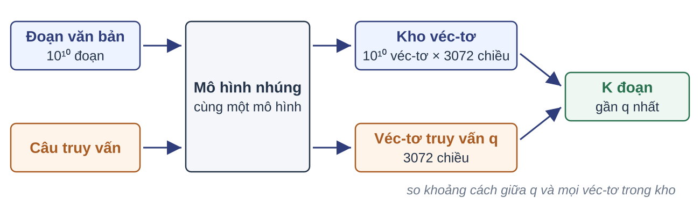
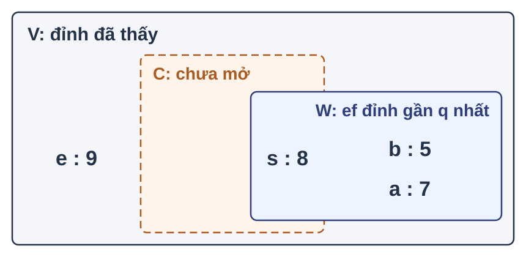
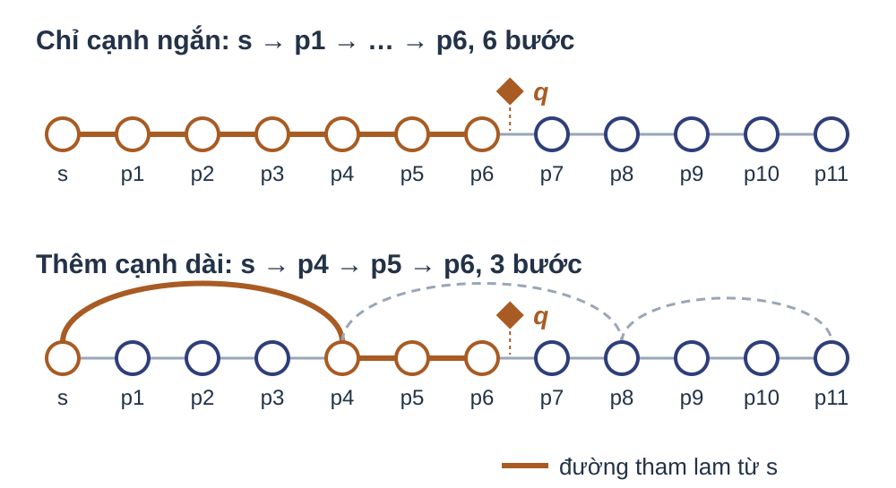
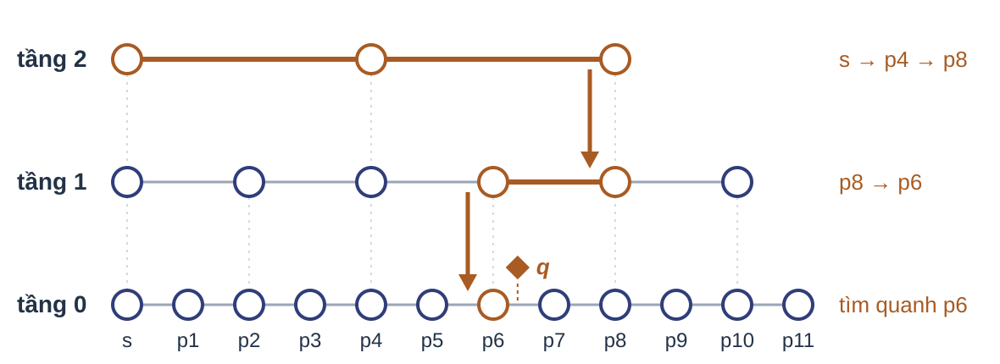
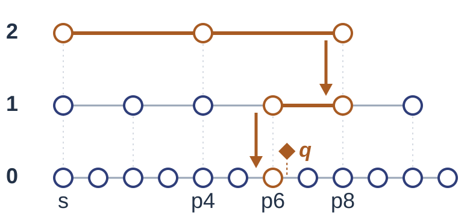
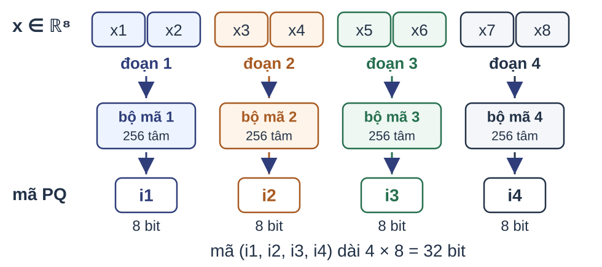
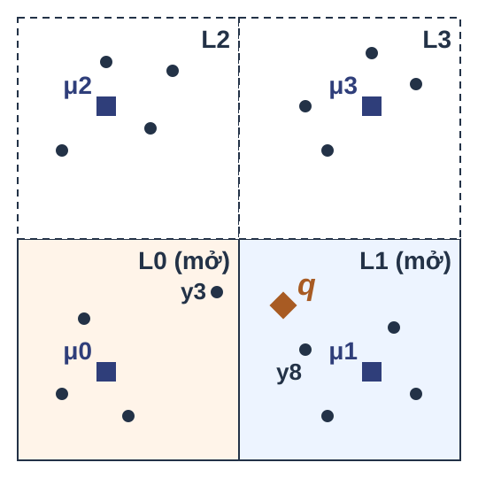

Chỉ mục hàng xóm gần đúng Đồ thị nhiều tầng bớt số phép đo, mã ngắn bớt chi phí mỗi phép đo; đổi lại, có thể sót hàng xóm thật.
Giải thuật nền tảng của Khoa học dữ liệu
Học kỳ 1 · Năm học 2026–2027
Trường Đại học Công nghệ · Đại học Quốc gia Hà Nội
Bài 06 tìm các cặp tương đồng bên trong một tập; băm nhạy cảm theo tính cục bộ (LSH) chỉ xác minh cặp cùng thùng. Bài toán ở đây là truy vấn: cho một véc-tơ mới, tìm các véc-tơ gần nó nhất trong một kho rất lớn. Đồ thị thế giới nhỏ phân tầng (Hierarchical Navigable Small World, HNSW) giảm số véc-tơ phải đo bằng cách đi trên đồ thị; lượng tử hóa tích (product quantization, PQ) thay mỗi véc-tơ bằng một mã ngắn; tệp đảo kết hợp PQ (IVF-PQ) chỉ mở một phần kho rồi chấm điểm bằng mã ngắn. Cả ba cấu trúc đều đổi một phần độ chính xác lấy thời gian và bộ nhớ, nên kết quả có thể thiếu hàng xóm thật.
Nguồn: Stanford BIODS 271, bài 12, tr.16–18 (bối cảnh); Princeton COS 597A, lớp 8–9 (cơ chế); Malkov và Yashunin (HNSW); Jégou, Douze và Schmid (PQ).
Tiên quyết và quy ước Nhắc lại: băm nhạy cảm theo tính cục bộ (LSH) chỉ xác minh ứng viên cùng thùng với $q$ (Bài 06).
Suy ra hàng xóm không cùng thùng với $q$ ở dải nào bị bỏ sót.
Nhắc lại: $\|x-y\|_2^2=\sum_{j=1}^{m}\sum_{i\in G_j}(x_i-y_i)^2$ với $G_1,\ldots,G_m$ là phân hoạch của $\{1,\ldots,D\}$.
Ký hiệu: kho $Y=\{y_1,\ldots,y_N\}\subset\mathbb R^D$; truy vấn $q\in\mathbb R^D$; số hàng xóm $K$, $1\le K\le N$.
Quy ước: 1 TB là $10^{12}$ byte; tọa độ viết $(1{,}7;\ 0{,}4)$.
Với họ hàm $(d_1,d_2,p_1,p_2)$-nhạy cảm, $b$ dải, $r$ hàm mỗi dải và mọi hàm chọn độc lập từ họ, một điểm cách $q$ không quá $d_1$ trùng khóa với $q$ ở một dải với xác suất ít nhất $p_1^r$, nên bị bỏ sót ở cả $b$ dải với xác suất không quá $(1-p_1^r)^b$. Dạng tổng theo nhóm tọa độ là cơ sở của khoảng cách bất đối xứng trong PQ và của phép tính trên phần dư trong IVF-PQ. Đồ thị có hướng, hàng đợi ưu tiên và k-means được dùng lại từ các học phần trước. Dung lượng tính theo hệ thập phân, chưa gồm mã định danh; tọa độ dùng dấu chấm phẩy vì dấu phẩy là dấu thập phân.
Nguồn: MMDS ấn bản 3, Chương 3 (LSH); Jégou, Douze và Schmid, mục II-A (k-means, sai số bình phương); Princeton COS 597A, lớp 9, tr.9 (hàng đợi ưu tiên).
Mục tiêu học tập Đặc tả bài toán $K$ hàng xóm gần đúng và tính độ thu hồi tại $K$. Chạy tay tìm kiếm trên đồ thị; mã hóa và tính khoảng cách bằng lượng tử hóa tích (PQ). Tính bộ nhớ, chi phí truy vấn; chọn chỉ mục cho kho $10^{10}$ véc-tơ với 6 TB, 10 ms. Mục tiêu 1 đòi viết đầu vào, đầu ra của tìm đúng và tìm gần đúng, rồi tính độ thu hồi từ hai tập; câu hỏi ở trang độ thu hồi và câu hỏi về $\operatorname{recall@3}$ ở vết truy vấn IVF-PQ kiểm mục tiêu này. Mục tiêu 2 đòi lập vết tìm kiếm chùm, mã hóa một véc-tơ bằng PQ và cộng các ô bảng tra; câu hỏi ở các trang tìm kiếm chùm, ba tham số HNSW, lượng tử hóa véc-tơ và câu hỏi tự kiểm tra 1 kiểm nó. Mục tiêu 3 đòi đếm byte và số thao tác theo mô hình, rồi chọn chỉ mục theo ngưỡng bộ nhớ và độ thu hồi; các trang chi phí, câu hỏi tự kiểm tra 2, 3 và ba nhiệm vụ thực hành kiểm nó.
Nội dung Bài toán hàng xóm gần đúng Tìm kiếm trên đồ thị lân cận Đồ thị thế giới nhỏ phân tầng (HNSW) Lượng tử hóa tích (PQ) Tệp đảo kết hợp PQ (IVF-PQ) Tổng kết và tự kiểm tra Bài tập thực hành Đọc trước: Malkov và Yashunin, mục 3–4; Jégou, Douze và Schmid, mục II–IV; Princeton COS 597A, lớp 8–9.
Bài toán hàng xóm gần đúng xuất phát từ kho mười tỷ véc-tơ mà quét đầy đủ không đáp ứng được; chất lượng đo bằng độ thu hồi, chi phí truy vấn tách thành số véc-tơ được đo nhân chi phí một phép đo. Tìm kiếm chùm trên đồ thị giảm thừa số thứ nhất, đúng trên các đỉnh đã thấy. Đồ thị nhiều tầng thêm cạnh dài để rút ngắn đường đi, nhưng vẫn giữ véc-tơ gốc. Lượng tử hóa tích giảm thừa số thứ hai và bộ nhớ bằng mã ngắn, nhưng quét đủ vẫn chấm mọi mã. IVF-PQ chỉ chấm mã trong một phần kho. Mỗi cấu trúc khắc phục một giới hạn của cấu trúc trước; một hệ thống chỉ dùng cấu trúc hợp ngân sách. Tổng kết trả lời bài toán mở đầu; bài tập thực hành đo lại đánh đổi của PQ và IVF-PQ.
Vấn đề trung tâm Nhu cầu: tìm $K$ véc-tơ gần $q$ trong kho $10^{10}$ véc-tơ, dưới 10 ms, 6 TB (giả định).
Tìm kiếm chùm: đo ít đỉnh; đúng trên đỉnh đã thấy. Đồ thị nhiều tầng: rút ngắn đường đi, vẫn giữ véc-tơ gốc. PQ: mã ngắn, tra bảng; vẫn chấm mọi mã. IVF-PQ: chỉ chấm mã trong vài danh sách gần $q$. Quy mô lấy từ cấu hình của nguồn: $N=10^{10}$ véc-tơ, $D=3072$ chiều, số thực 4 byte; dung lượng và thời gian quét đủ được tính ở ví dụ truy hồi ngữ nghĩa. Ngân sách một máy 6 TB bộ nhớ, 10 ms mỗi truy vấn và tốc độ $10^{12}$ lượt tọa độ mỗi giây là giả định của học phần, không lấy từ nguồn. Đặc tả gần đúng cho phép chỉ mục thiếu hàng xóm thật, và mức thiếu được đo bằng độ thu hồi. Tìm kiếm chùm chỉ đo các đỉnh trên đường đi; tầng thưa rút ngắn đường đi nhưng vẫn lưu véc-tơ gốc; PQ giảm chi phí mỗi phép đo; IVF-PQ giảm cả hai thừa số khi danh sách cân bằng. Lựa chọn chỉ mục đổi theo ngân sách bộ nhớ, ngân sách thời gian và ngưỡng độ thu hồi.
Nguồn: Stanford BIODS 271, bài 12, tr.17.
Ví dụ: truy hồi ngữ nghĩa trên mười tỷ véc-tơ $N=10^{10}$ đoạn văn bản; véc-tơ $D=3072$ chiều; số thực 4 byte.

Lưu kho: $10^{10}\cdot3072\cdot4$ byte $=122{,}88$ TB
Quét một truy vấn: $10^{10}\cdot3072\approx3{,}07\cdot10^{13}$ lượt tọa độ
Câu hỏi: Với $10^{12}$ và $10^{13}$ lượt tọa độ mỗi giây, quét toàn kho gấp bao nhiêu lần 10 ms?
Mô hình nhúng biến mỗi đoạn văn bản thành một véc-tơ số thực sao cho hai đoạn có nội dung gần nhau cho hai véc-tơ gần nhau theo một độ đo (tích vô hướng, cosin hoặc khoảng cách Euclid). Câu truy vấn đi qua cùng mô hình, nên tìm đoạn liên quan trở thành tìm véc-tơ gần $q$.
Số liệu kho lấy từ cấu hình của nguồn: $N=10^{10}$ véc-tơ, $D=3072$ chiều, mỗi tọa độ là số thực 32 bit. Dung lượng tính theo hệ thập phân, chưa gồm mã định danh. Một lượt quét đọc và xử lý mọi tọa độ của mọi véc-tơ.
Lời giải: $3{,}072\cdot10^{13}/10^{12}\approx30{,}7$ giây cho một truy vấn; $30{,}72/0{,}01\approx3072$ lần ngân sách 10 ms. Với $10^{13}$ lượt mỗi giây, tức phần cứng nhanh gấp 10 lần: $3{,}07$ giây, vẫn gấp khoảng $307$ lần ngân sách. Cả hai con số chưa kể thời gian đọc 122,88 TB từ bộ nhớ, phần không giảm khi chỉ tăng tốc độ tính. Tốc độ $10^{12}$ tọa độ mỗi giây và ngân sách 10 ms là giả định, không phải số đo.
Nguồn: Stanford BIODS 271, bài 12, tr.16 (quy trình truy hồi dày đặc) và tr.17 (cấu hình $N$, $D$, độ chính xác 32 bit).
Bài toán $K$ hàng xóm gần nhất Nhu cầu: một tập đúng để so mọi chỉ mục; quét đủ tạo nó bằng $3{,}07\cdot10^{13}$ lượt tọa độ.
Đầu vào: kho $Y$, $|Y|=N$; truy vấn $q$; khoảng cách $d$; số nguyên $1\le K\le N$.
Đầu ra: $N_K(q)$, gồm $K$ điểm có $d(q,y)$ nhỏ nhất; hòa thì chỉ số $i$ nhỏ đứng trước.
Ví dụ. Năm điểm với $d(q,y_i)$ trong bảng, $K=3$: $N_3(q)=\{y_4,y_2,y_5\}$.
$i$ $1$ $2$ $3$ $4$ $5$ $d(q,y_i)$ $2{,}5$ $1{,}2$ $3{,}0$ $0{,}8$ $1{,}7$
Trong ví dụ, thứ tự tăng dần là $y_4{:}0{,}8$, $y_2{:}1{,}2$, $y_5{:}1{,}7$, $y_1{:}2{,}5$, $y_3{:}3{,}0$; ba điểm đầu tạo $N_3(q)$. Quét đủ tính $N$ khoảng cách, mỗi khoảng cách Euclid đọc $D$ cặp tọa độ, nên tốn $\Theta(ND)$. Mô hình chi phí của bài chỉ đếm tọa độ được xử lý; giữ $K$ điểm tốt nhất bằng một hàng đợi ưu tiên kích thước $K$ tốn thêm $O(N\log K)$ phép so sánh. Quy tắc phá hòa theo chỉ số $i$ của $y_i$ làm $N_K(q)$ xác định duy nhất, nên độ thu hồi của một chỉ mục cũng xác định duy nhất. Tìm kiếm trên đồ thị chỉ cần một hàm khoảng cách tính được; PQ và IVF-PQ dùng bình phương khoảng cách Euclid.
Nguồn: Malkov và Yashunin, tr.1 (bài toán K-NNS); Jégou, Douze và Schmid, tr.1 (tìm hàng xóm gần nhất và chi phí quét).
Tìm hàng xóm gần đúng Định nghĩa. Bài toán tìm gần đúng (approximate nearest neighbor) có cùng đầu vào, đầu ra là tối đa $K$ điểm $\widehat N_K(q)\subseteq Y$.
Chỉ mục (index) là cấu trúc dựng sẵn trên $Y$, quyết định véc-tơ nào được đo và đo thế nào.
Ví dụ. Năm điểm trên, $K=3$: chỉ mục trả $\widehat N_3(q)=\{y_4,y_5,y_1\}$.
Thiếu $y_2$ vì $y_2$ không được đo, hoặc khoảng cách xấp xỉ xếp $y_2$ sau $y_1$.
Trong ví dụ, $y_2{:}1{,}2$ bị thay bằng $y_1{:}2{,}5$. Hai nguồn thiếu điểm ứng với hai thừa số của mô hình chi phí. Điểm không được đo, chẳng hạn nằm ngoài thùng của LSH hay ngoài tập đỉnh đã đo trên đồ thị, bị bỏ sót dù khoảng cách thật nhỏ. Điểm được đo bằng khoảng cách xấp xỉ, như trong PQ, có thể bị xếp sai thứ tự: $y_1$ vào kết quả còn $y_2$ thì không, nên khoảng cách xấp xỉ của $y_2$ lớn hơn của $y_1$. Mức thiếu điểm được định lượng bằng độ thu hồi. Việc phân biệt hai nguồn cho biết nên mở rộng vùng tìm hay làm phép đo chính xác hơn. Chữ “tối đa” cho phép chỉ mục trả ít hơn $K$ điểm khi phần kho đã đo có ít hơn $K$ điểm.
Nguồn: Malkov và Yashunin, tr.1 (bài toán K-ANNS); Jégou, Douze và Schmid, tr.1.
Độ thu hồi tại $K$ $N_K(q)$ là kết quả của quét đầy đủ với cùng quy tắc phá hòa, nên tử số xác định. Khi chỉ mục trả đủ $K$ điểm, độ thu hồi bằng 1 khi và chỉ khi chỉ mục trả đúng tập hàng xóm thật; nếu trả ít hơn $K$ điểm, mẫu số vẫn là $K$. Với ví dụ năm điểm, $\{y_4,y_5,y_1\}\cap\{y_4,y_2,y_5\}=\{y_4,y_5\}$ nên $\operatorname{recall@3}=2/3$.
Lời giải: giao là $\{a,c\}$, $\operatorname{recall@5}=2/5$.
Nguồn: Malkov và Yashunin, tr.1 (recall là tỷ lệ hàng xóm thật tìm được trong $K$ kết quả). Bài báo PQ, mục V-A, tr.7, dùng recall@R với quy ước khác; học phần dùng định nghĩa tập hợp ở trên.
Độ thu hồi trung bình Định nghĩa. Độ thu hồi trung bình (mean recall) trên tập truy vấn $Q$:
$\overline{\operatorname{recall@K}}=\dfrac{1}{|Q|}\displaystyle\sum_{q\in Q}\operatorname{recall@K}(q)$
Ví dụ. $K=10$, $|Q|=10$, mỗi truy vấn tìm lại 9 hàng xóm thật: trung bình $0{,}9$.
Lưu ý: trung bình $0{,}9$ không cho biết tỷ lệ truy vấn đúng hoàn toàn.
Câu hỏi: Chín truy vấn đạt 1, một đạt 0. Tính trung bình và tỷ lệ truy vấn đúng hoàn toàn.
Lời giải: trung bình $(9\cdot1+1\cdot0)/10=0{,}9$, bằng ví dụ; tỷ lệ truy vấn đúng hoàn toàn là $9/10$, còn ở ví dụ là $0$. Ở ví dụ, mỗi truy vấn thiếu một hàng xóm; ở câu hỏi, chín truy vấn đúng hoàn toàn và một truy vấn không tìm được hàng xóm thật nào. Khi cần biết tỷ lệ truy vấn đúng hoàn toàn, phải đếm riêng đại lượng đó. Bài tập chỉ mục IVF-PQ dùng $nok$, số truy vấn trong 100 truy vấn có kết quả đầu tiên đúng; $nok/100$ là độ thu hồi trung bình với $K=1$.
Nguồn: Malkov và Yashunin, tr.1 (recall của một truy vấn); sổ thực hành Princeton COS 597A, lớp 8, ô 155 ($nok$ đếm trên 100 truy vấn).
Bốn trục đánh giá chỉ mục Câu hỏi: A đạt $\operatorname{recall@10}=0{,}9$ trong 5 ms; B đạt $0{,}7$ trong 2 ms. Nêu điều kiện để chọn B.
Trục Đại lượng đo Chất lượng $\operatorname{recall@K}$ trung bình Truy vấn độ trễ, số khoảng cách Xây dựng thời gian, dữ liệu huấn luyện Bộ nhớ byte mỗi véc-tơ, kể cả chỉ mục
Lưu ý: chỉ so hai chỉ mục trên cùng dữ liệu, cùng $K$, cùng phần cứng.
Các chỉ mục gần đúng đánh đổi chất lượng lấy thời gian và bộ nhớ, nên một con số đơn lẻ không xếp hạng được hai chỉ mục. Theo từng trục, phải giữ cố định: tập truy vấn, $K$ và tập đúng cho chất lượng; phần cứng và số luồng cho truy vấn; tham số chỉ mục cho xây dựng; chính sách lưu véc-tơ gốc cho bộ nhớ.
Lời giải: chọn B khi yêu cầu đặt độ trễ lên trước và chấp nhận độ thu hồi 0,7, ví dụ “độ trễ dưới 3 ms”; với yêu cầu “độ thu hồi ít nhất 0,85 với độ trễ thấp nhất” thì chọn A.
Nguồn: Princeton COS 597A, lớp 8, tr.2–4 (đánh đổi độ chính xác, bộ nhớ, tốc độ); lớp 9, tr.2 (chi phí xây dựng đồ thị).
Hai cách giảm chi phí truy vấn Mô hình: chi phí truy vấn $\approx$ số véc-tơ được đo $n_c$ $\times$ chi phí một phép đo.
Quét đủ có $n_c=N=10^{10}$, mỗi phép đo $D=3072$ lượt tọa độ.
Cấu trúc Thừa số giảm Lưu véc-tơ gốc Thiếu điểm vì LSH $n_c$ có không được đo Đồ thị lân cận $n_c$ có không được đo PQ chi phí một phép đo không đo xấp xỉ IVF-PQ cả hai không cả hai
LSH và đồ thị lân cận vẫn lưu véc-tơ gốc để đo khoảng cách thật; PQ dùng một mình vẫn chấm cả $N$ mã bằng khoảng cách xấp xỉ. Cấu trúc giữ véc-tơ gốc cần ít nhất $4ND$ byte, tức 122,88 TB với kho mở đầu; mã PQ dài từ vài byte đến vài trăm byte. Mô hình bỏ qua chi phí cố định mỗi truy vấn: lập bảng tra và chọn tâm thô được đếm ở trang chi phí PQ, IVF-PQ, còn chi phí băm $q$ của LSH không tính trong bài. Một lần tra bảng và một lượt tọa độ không nhất thiết tốn cùng thời gian; mô hình chỉ đếm số thao tác.
Nguồn: MMDS ấn bản 3, Chương 3 (LSH); Princeton COS 597A, lớp 9, tr.4 (LSH cho truy vấn), tr.5 (phân cụm kèm nén PQ), tr.7 (đồ thị); lớp 8, tr.2 (nén và cắt tỉa).
2. Tìm kiếm trên đồ thị lân cậnMuốn đo ít véc-tơ mà vẫn tới điểm gần $q$, phải đi trên đồ thị lân cận và giữ nhiều hướng.
Đồ thị lân cận · Tìm kiếm tham lam · Tìm kiếm chùm · SEARCH‑LAYER · Bất biến
Chi phí truy vấn bằng số véc-tơ được đo nhân chi phí một phép đo, và quét đủ đo cả $N=10^{10}$ véc-tơ. Trên đồ thị bảy đỉnh làm ví dụ, tìm kiếm tham lam kẹt ở cực tiểu cục bộ, còn tìm kiếm chùm với $ef=3$ giữ nhánh $s$ và tới được $z$. SEARCH-LAYER được đặc tả và chứng minh bằng bất biến: kết quả đúng trên tập đỉnh đã thấy, còn vùng chưa thấy có thể chứa đỉnh gần $q$ hơn.
Đồ thị lân cận Nhu cầu: quét đủ đo cả $N=10^{10}$ véc-tơ; cần đo ít véc-tơ mà vẫn tới điểm gần $q$.
Đồ thị lân cận là đồ thị có đỉnh là véc-tơ, cạnh nối mỗi đỉnh với vài đỉnh gần nó.
Chỉ mục lưu véc-tơ, danh sách lân cận của mỗi đỉnh và một điểm vào.
Tìm kiếm đi từ điểm vào, đo $d(q,\cdot)$ tại các lân cận rồi sang đỉnh gần $q$ hơn; chỉ các đỉnh trên đường đi được đo. Trong hình, mỗi đoạn thẳng là hai cạnh có hướng ngược nhau; vị trí các đỉnh giữ đúng tỷ lệ khoảng cách tới $q$. Đồ thị không thay đổi hàm khoảng cách; nó chỉ quyết định véc-tơ nào được đo. Bộ nhớ của chỉ mục gồm $N$ véc-tơ cộng với danh sách lân cận, khoảng $N\cdot(4D+4g)$ byte với số thực 4 byte, $g$ là bậc và mỗi mã định danh chiếm 4 byte khi $N<2^{32}$ (8 byte với kho $10^{10}$).
Đồ thị bảy đỉnh do học phần dựng để chạy tay; cùng đồ thị được dùng đến hết phần tìm kiếm trên một tầng.
Nguồn: Princeton COS 597A, lớp 9, tr.7 (cấu trúc dữ liệu), tr.8 (tìm kiếm tham lam); Malkov và Yashunin, tr.2.
Tìm kiếm tham lam Tại đỉnh hiện tại, đo mọi lân cận; sang lân cận gần $q$ nhất nếu nó gần hơn, ngược lại dừng.
Ký hiệu: $e{:}9$ nghĩa là $d(e,q)=9$.
Đỉnh Lân cận Quyết định $e:9$ $a:7,\ s:8$ sang $a$ $a:7$ $e:9,\ b:5$ sang $b$ $b:5$ $a:7$ dừng
Kết luận: $b$ là cực tiểu cục bộ (không lân cận nào gần $q$ hơn), nhưng $d(z,q)=1<5$.
Cực tiểu cục bộ là đỉnh không có lân cận nào gần $q$ hơn chính nó. Điều kiện dừng của tham lam chỉ kiểm các lân cận trực tiếp, nên nó bảo đảm kết quả là cực tiểu cục bộ, không bảo đảm là đỉnh gần $q$ nhất. Ở đây nhánh $e\to s$ bị bỏ ngay ở bước đầu vì $s:8$ xa hơn $a:7$, trong khi chính nhánh này dẫn tới $t:4$, $u:2$, $z:1$.
Thuật toán dừng vì khoảng cách giảm nghiêm ngặt sau mỗi bước và đồ thị hữu hạn. Nếu khoảng cách đã đo được ghi nhớ, ví dụ cần 4 phép đo: $e$, rồi $a$ và $s$, rồi $b$; ba đỉnh $t,u,z$ không được đo.
Đồ thị và khoảng cách do học phần dựng từ cơ chế của nguồn, không phải dữ liệu thực nghiệm. Nguồn: Princeton COS 597A, lớp 9, tr.8 (tham lam, cực tiểu cục bộ, không quay lui), tr.11–13 (ví dụ một chiều).
Tìm kiếm chùm Muốn tới $z{:}1$ khi tham lam dừng ở $b{:}5$, phải giữ nhánh $s$ chưa đi.
Tìm kiếm chùm giữ nhiều hướng thay vì một, nên ít kẹt ở cực tiểu cục bộ hơn tham lam; trên đồ thị ví dụ, $ef=3$ đủ để tới $z$. Ban đầu $C$ và $W$ chỉ chứa điểm vào; $C$ là hàng đợi ưu tiên theo khoảng cách tới $q$, và đỉnh bị đẩy khỏi $W$ vẫn ở lại $C$ cho tới khi được mở. Khi mở một đỉnh, lân cận chưa thấy vào $C$ và $W$ nếu $|W|<ef$ hoặc nó gần $q$ hơn phần tử xa nhất của $W$; nếu $W$ thừa thì bỏ phần tử xa nhất. Phần tử xa nhất của $W$ là ngưỡng: thuật toán dừng khi đỉnh sắp mở xa $q$ hơn ngưỡng, hoặc khi $C$ rỗng. Với $ef=1$, $W$ chỉ có một đỉnh nên mỗi bước chỉ đi sang lân cận tốt hơn đỉnh hiện tại, đúng là tìm kiếm tham lam.
Nguồn: Princeton COS 597A, lớp 9, tr.9 (tìm kiếm chùm với hàng đợi ưu tiên); Malkov và Yashunin, Thuật toán 2, tr.4.
Ví dụ: tìm kiếm chùm trên đồ thị bảy đỉnh Điểm vào $e$, $ef=3$. Lập $C$ và $W$ sau mỗi lần mở.
Mở $C$ sau bước $W$ sau bước, $ef=3$ $e$ $a{:}7,\ s{:}8$ $a{:}7,\ s{:}8,\ e{:}9$ $a$ $b{:}5,\ s{:}8$ $b{:}5,\ a{:}7,\ s{:}8$ $b$ $s{:}8$ $b{:}5,\ a{:}7,\ s{:}8$ $s$ $t{:}4$ $t{:}4,\ b{:}5,\ a{:}7$ $t,u,z$ rỗng $z{:}1,\ u{:}2,\ t{:}4$
Câu hỏi: chạy lại với $ef=2$; thuật toán dừng ở bước nào, trả $W$ nào? Gợi ý: dừng khi đỉnh sắp mở xa $q$ hơn đỉnh xa nhất của $W$, hoặc $C$ rỗng.
Khi mở $b$, lân cận duy nhất $a$ đã thấy, nhưng $s{:}8$ vẫn nằm trong $C$; đó là nhánh dự phòng mà tham lam đã bỏ. Sau khi mở $s$, ba lần mở $t$, $u$, $z$, gộp trong hàng cuối của bảng, lần lượt đưa $u{:}2$ rồi $z{:}1$ vào $W$; khi mở $z$, lân cận duy nhất $u$ đã thấy và $C$ rỗng nên thuật toán dừng.
Lời giải $ef=2$: sau khi mở $e$, $W=\{a{:}7,s{:}8\}$; mở $a$ thêm $b{:}5$ và bỏ $s$, $W=\{b{:}5,a{:}7\}$; mở $b$ không thêm gì; ở lần lấy thứ tư từ $C$, đỉnh lấy ra là $s{:}8$, xa hơn phần tử xa nhất $a{:}7$ của $W$, nên thuật toán dừng mà không mở $s$ và trả $W=\{b,a\}$. Chùm phải đủ rộng để giữ $s$ trong $W$ thì mới đi tiếp qua nhánh $s$.
Vết chạy tính theo Thuật toán 2 của bài báo HNSW trên đồ thị ví dụ do học phần dựng. Nguồn: Princeton COS 597A, lớp 9, tr.9; Malkov và Yashunin, Thuật toán 2, tr.4.
Thuật toán: SEARCH-LAYER 
Trạng thái của ví dụ sau khi mở $b$, $ef=3$.
Đầu vào: truy vấn $q$; bề rộng $ef\ge1$; tập điểm vào $ep$ với $1\le|ep|\le ef$; tầng $\ell_c$ (một đồ thị: $\ell_c=0$).
Đầu ra: $W$, tối đa $ef$ đỉnh gần $q$ nhất trong các đỉnh đã thấy.
Ký hiệu: $V$ là tập đỉnh đã thấy; $C,W\subseteq V$.
Tìm kiếm chùm trên đồ thị ví dụ chính là SEARCH-LAYER với $ep=\{e\}$, $ef=3$. Tham số $\ell_c$ chỉ tầng của đồ thị nhiều tầng; khi chỉ có một đồ thị, $\ell_c=0$. Mọi đỉnh trong $ep$ phải thuộc tầng $\ell_c$. Điều kiện $1\le|ep|\le ef$ làm $W\leftarrow ep$ là khởi tạo hợp lệ: $W$ không rỗng nên luôn có phần tử xa nhất, và không vượt $ef$.
Đầu ra chỉ nói về các đỉnh đã thấy, không nói về toàn tầng: vùng chưa được phát hiện có thể chứa đỉnh gần $q$ hơn. Trong hình, $e$ đã thấy nhưng bị đẩy khỏi $W$; $s$ vừa chưa mở vừa thuộc $W$.
Nguồn: Malkov và Yashunin, Thuật toán 2, tr.4.
Thuật toán: SEARCH-LAYER
V ← ep; C ← ep; W ← ep
while C khác rỗng:
c ← lấy ra đỉnh gần q nhất trong C
f ← đỉnh xa q nhất trong W
if d(c,q) > d(f,q): break
for y in lân cận của c ở tầng ℓc:
if y ∉ V:
thêm y vào V
f ← đỉnh xa q nhất trong W
if |W| < ef or d(y,q) < d(f,q):
thêm y vào C và W
if |W| > ef: bỏ đỉnh xa q nhất khỏi W
return W
Ví dụ. $ef=3$, mở $s$ khi $W=\{b,a,s\}$: $f=s{:}8$; thêm $t{:}4$, bỏ $s$; ngưỡng mới $f=a{:}7$.
Thao tác quyết định là so khoảng cách của đỉnh mới với ngưỡng $f$, phần tử xa nhất của $W$. Giả mã chưa cho biết $W$ đúng theo nghĩa nào; bất biến SEARCH-LAYER trả lời điều đó. Ngưỡng phải tính lại trong vòng lặp lân cận vì $W$ có thể đổi sau mỗi lần thêm và bỏ; dùng ngưỡng cũ sẽ nhận những đỉnh không còn đủ tốt. Lệnh break chạy khi đỉnh gần nhất còn trong $C$ đã xa $q$ hơn $f$. Khi đó mọi đỉnh của $W$ đều đã được mở: một đỉnh của $W$ còn trong $C$ sẽ gần $q$ hơn $c$, trái với cách chọn $c$. Mở tiếp các ứng viên xa hơn vẫn có thể gặp đỉnh tốt hơn; dừng ở đây là đánh đổi để giới hạn số phép đo, nên kết quả là gần đúng.
Thuật toán kết thúc vì mỗi đỉnh vào $V$ nhiều nhất một lần, mỗi đỉnh vào $C$ nhiều nhất một lần và tầng hữu hạn. Điều kiện dừng của nguồn chỉ so $d(c,q)$ với $d(f,q)$, không đòi $|W|=ef$.
Nguồn: Malkov và Yashunin, Thuật toán 2, tr.4.
Tính đúng: SEARCH-LAYER Bất biến: $W$ là một tập gồm $\min(ef,|V|)$ đỉnh của $V$ gần $q$ nhất.
Khởi tạo $V=W=ep$, $|ep|\le ef$. Duy trì Đỉnh mới $y$ vào $V$; vào $W$ nếu $|W|<ef$, hoặc thay đỉnh xa nhất nếu gần $q$ hơn. Khi dừng $W$ đúng trên $V$; đỉnh ngoài $V$ không được xét.
Ví dụ. $ef=2$: $W=\{b{:}5,a{:}7\}$ đúng trên $V=\{e,a,s,b\}$, nhưng $z{:}1\notin V$.
Duy trì: khi $|W|<ef$, mọi đỉnh mới đều vào $W$, nên $W=V$. Khi $|W|=ef$, đỉnh mới $y$ hoặc gần $q$ hơn đỉnh xa nhất $f$ của $W$, khi đó $y$ thay $f$ và $W$ vẫn là $ef$ đỉnh gần nhất của $V\cup\{y\}$; hoặc không gần hơn, khi đó $y$ không thể thuộc $ef$ đỉnh gần nhất và $W$ giữ nguyên. Chữ “một tập” xử lý trường hợp hòa khoảng cách.
Kết luận khi dừng chỉ nói về $V$. Ở lần chạy $ef=2$, $W=\{b,a\}$ đúng là hai đỉnh gần nhất trong bốn đỉnh đã thấy, nhưng $z$ cách $q$ bằng 1 chưa bao giờ được thấy vì $s$ không được mở. Tính kết thúc: mỗi đỉnh vào $V$ nhiều nhất một lần và chỉ đỉnh vào $V$ mới có thể vào $C$; tầng hữu hạn. Trường hợp xấu, thuật toán thăm mọi đỉnh và cạnh của tầng.
Nguồn: suy ra từ Thuật toán 2, Malkov và Yashunin, tr.4; bất biến được kiểm bằng chương trình trên đồ thị ví dụ và đồ thị ngẫu nhiên.
3. Đồ thị thế giới nhỏ phân tầng (HNSW)Muốn tới vùng gần $q$ sau ít bước, phải đặt các tầng thưa có cạnh dài phía trên đồ thị chứa mọi điểm.
Cạnh dài · Truy vấn nhiều tầng · Phân phối tầng · Chèn điểm · Tham số và chi phí
SEARCH-LAYER đúng trên tập đỉnh đã thấy theo bất biến của nó, nhưng khi đồ thị chỉ có cạnh ngắn, số bước tăng theo khoảng cách từ điểm vào tới $q$. Cạnh dài được đặt vào các tầng thưa phía trên tầng 0, và truy vấn đi từ tầng cao xuống tầng 0. Tầng của mỗi điểm được rút ngẫu nhiên, phép chèn dùng lại SEARCH-LAYER, rồi số phép đo và bộ nhớ được đếm. Với kho mười tỷ véc-tơ, chỉ mục chiếm khoảng 125,5 TB, trong đó khoảng 98% là véc-tơ gốc, nên véc-tơ cần được nén.
Ví dụ: cạnh dài trên mười hai điểm thẳng hàng SEARCH-LAYER đúng trên đỉnh đã thấy; với cạnh ngắn, số bước tăng theo khoảng cách từ điểm vào tới $q$.
Nhu cầu: ít bước khi $q$ xa điểm vào.
$s$ ở 0, $p1,\ldots,p11$ ở $1,\ldots,11$, $q$ ở $6{,}4$; đếm số bước tham lam từ $s$.

Kết luận: thêm cạnh $s$–$p4$, $p4$–$p8$, $p8$–$p11$ giảm từ 6 xuống 3 bước.
Chỉ với cạnh giữa hai điểm liền kề, tham lam đi $s,p1,\ldots,p6$: 6 bước; trên $N$ điểm thẳng hàng có thể tới khoảng $N$ bước. Khi có cạnh ở nhiều thang độ dài, mỗi bước đi được một quãng tỷ lệ với khoảng cách còn lại, nên số bước giảm mạnh; đó là ý tưởng của danh sách nhảy (skip list). Cạnh dài phải đặt đúng chỗ: nếu chỉ có $p4$–$p8$ mà không có $s$–$p4$, tham lam từ $s$ vẫn cần 6 bước.
Malkov và Yashunin tách cạnh theo thang độ dài vào các tầng. Ví dụ một chiều do học phần dựng lại theo ý của nguồn; vết tham lam được tính lại.
Nguồn: Princeton COS 597A, lớp 9, tr.11–13; Malkov và Yashunin, mục 3, tr.2–3 (tách cạnh theo thang độ dài, so sánh với skip list).
Đồ thị nhiều tầng 
Đồ thị thế giới nhỏ phân tầng (Hierarchical Navigable Small World, HNSW) gồm nhiều tầng lồng nhau. Tầng 0 chứa mọi điểm; tầng trên thưa hơn, cạnh dài hơn. Tầng trên tìm với $ef=1$; điểm dừng là điểm vào của tầng dưới. Tầng 0 tìm với chùm rộng $efSearch$. Cạnh dài đưa tìm kiếm tới gần $q$ nhanh, cạnh ngắn tinh chỉnh quanh $q$; HNSW đặt hai loại cạnh vào các tầng khác nhau. “Lồng nhau” nghĩa là mỗi tầng trên là tập con của tầng ngay dưới: một điểm có tầng tối đa $\ell$ thì xuất hiện ở mọi tầng $0,\ldots,\ell$; đường chấm dọc trong hình nối cùng một điểm qua các tầng. Ở mỗi tầng trên, SEARCH-LAYER với $ef=1$ chính là tìm kiếm tham lam; nó chỉ cần đưa điểm vào tới gần $q$, nên không cần chùm rộng. Tầng 0 chứa mọi điểm và cạnh ngắn, nên chùm $efSearch$ được dùng ở đây để có nhiều ứng viên tốt.
Ba tầng và tập điểm của mỗi tầng do học phần chọn để minh họa; trong HNSW, tầng của mỗi điểm được rút ngẫu nhiên khi chèn.
Nguồn: Malkov và Yashunin, Hình 1 và mục 3, tr.3; Princeton COS 597A, lớp 9, tr.17.
Thuật toán: truy vấn HNSW Đầu vào: $q$, $K$, bề rộng $efSearch\ge K$.
Đầu ra: tối đa $K$ đỉnh gần $q$ nhất trong các đỉnh đã thấy ở tầng 0.
ep ← {điểm vào}; L ← tầng của điểm vào
for ℓc = L, L−1, …, 1:
W ← SEARCH-LAYER(q, ep, 1, ℓc)
ep ← W
W ← SEARCH-LAYER(q, ep, efSearch, 0)
return K đỉnh gần q nhất trong W

Ví dụ. $ep$ lần lượt là $\{p8\}$, $\{p6\}$; tầng 0 tìm quanh $p6$.
Ví dụ dùng mười hai điểm $s,p1,\ldots,p11$ trên một đường thẳng, $q$ ở tọa độ 6,4; tầng 2 gồm $s,p4,p8$, tầng 1 gồm $s,p2,p4,p6,p8,p10$; điểm vào là $s$ ở tầng 2.
Ở tầng trên, $ef=1$ biến SEARCH-LAYER thành tìm kiếm tham lam và $W$ có đúng một đỉnh, nên $ep$ luôn là tập một phần tử khi xuống tầng dưới. Điều kiện $efSearch\ge K$ để $W$ có chỗ cho $K$ kết quả; nếu phần đồ thị tới được có ít hơn $K$ đỉnh thì thuật toán trả ít hơn $K$. Thuật toán kết thúc vì có hữu hạn tầng và mỗi lời gọi SEARCH-LAYER kết thúc. Kết quả là gần đúng theo bất biến của SEARCH-LAYER: đúng trên các đỉnh đã thấy ở tầng 0.
Nguồn: Malkov và Yashunin, Thuật toán 5, tr.5.
Phân phối tầng của điểm mới Nhu cầu: khi chèn, mỗi điểm cần một tầng tối đa sao cho các tầng trên thưa dần.
Đặt $\ell=\lfloor-\ln(U)\,m_L\rfloor$, với $U\sim\operatorname{Uniform}(0,1]$ và $m_L>0$.
Mệnh đề. Với số nguyên $k\ge0$: $\Pr[\ell\ge k]=\rho^{k}$, trong đó $\rho=e^{-1/m_L}$.
Chứng minh. $\ell\ge k$ khi và chỉ khi $U\le e^{-k/m_L}$, và $U$ đều trên $(0,1]$.
Ý nghĩa: mỗi tầng giữ khoảng tỷ lệ $\rho$ số điểm của tầng ngay dưới.
Ví dụ. $m_L=1/\ln16$: $\rho=1/16$; với $N=10^{10}$, tầng cao nhất khoảng 8.
Chứng minh đầy đủ: $\ell\ge k$ khi và chỉ khi $-\ln(U)\,m_L\ge k$, tức $U\le e^{-k/m_L}$; vì $U$ đều trên $(0,1]$ nên xác suất bằng $e^{-k/m_L}=\rho^k$. Đây là phân phối hình học, giống danh sách nhảy (skip list) với tham số $\rho$. Miền $(0,1]$ tránh $\ln 0$. Mọi điểm thuộc tầng 0 vì $\ell\ge0$.
Bài báo chọn $m_L=1/\ln M$, với $M$ là số lân cận được nối cho mỗi điểm mới (định nghĩa ở thao tác chèn); khi đó $\rho=1/M$. Đây là lựa chọn thực nghiệm, không phải điều kiện để thuật toán đúng. Tầng cao nhất: kỳ vọng số điểm có $\ell\ge k$ là $N\rho^k$, bằng 1 khi $k=\log_{1/\rho}N=\log_{16}10^{10}\approx8{,}3$; mô phỏng một triệu lần rút với $\rho=1/16$ cho tỷ lệ $0{,}0626$ ở tầng $\ge1$ và $0{,}0039$ ở tầng $\ge2$.
Nguồn: Malkov và Yashunin, Thuật toán 1 dòng 4, tr.4; mục 3, tr.3 (phân phối hình học, số tầng logarit); mục 4.1, tr.5 ($m_L=1/\ln M$ ứng với tham số $1/M$ của skip list; ký hiệu $p$ của bài báo được đổi thành $\rho$ để khỏi trùng tên điểm $p1,\ldots,p11$).
Ví dụ: chèn một điểm vào đồ thị ba tầng Tầng $>\ell$: tìm $x$ với $ef=1$, không thêm cạnh.
Tầng $\le\ell$: tìm với bề rộng chùm $efConstruction$, rồi nối $x$ với $M$ đỉnh gần nó.
Điểm mới $x=2{,}6$, $\ell=1$, $efConstruction=3$, $M=2$. Xác định lân cận ở tầng 1, 0.
Tầng Tìm từ Kết quả 2 $s$, $ef=1$ $ep=\{p4\}$ 1 $p4$, $ef=3$ $\{p2,p4,s\}$; nối $p2,p4$ 0 $p2,p4,s$, $ef=3$ $\{p3,p2,p4\}$; nối $p3,p2$
Kết luận: $x$ nối với $p2,p4$ ở tầng 1 và với $p3,p2$ ở tầng 0.
Đồ thị là ví dụ ba tầng trên mười hai điểm, $s$ ở 0 và $p1,\ldots,p11$ ở $1,\ldots,11$: tầng 2 gồm $s,p4,p8$; tầng 1 gồm $s,p2,p4,p6,p8,p10$; điểm vào $s$. Khoảng cách tới $x$: $p3$ 0,4; $p2$ 0,6; $p4$ 1,4; $p1$ 1,6; $s$ 2,6.
Pha 1 chạy ở các tầng cao hơn $\ell$, ở đây chỉ tầng 2: tham lam từ $s$ tới $p4$, không thêm cạnh. Pha 2 chạy từ tầng $\min(L,\ell)=1$ xuống 0 với bề rộng chùm khi chèn bằng 3; kết quả $W$ của tầng trên là tập điểm vào của tầng dưới. Ở mỗi tầng, $x$ được nối hai chiều với 2 đỉnh gần nhất trong $W$; với giới hạn bậc 3 ở tầng trên và 4 ở tầng 0, không danh sách nào bị cắt.
Vết chạy tính theo Thuật toán 1 và 2 của bài báo, chọn lân cận đơn giản (Thuật toán 3). Nguồn: Malkov và Yashunin, Thuật toán 1, tr.4.
Thuật toán: chèn HNSW Đầu vào: $x$; chỉ mục; $M$; $efConstruction\ge M$; bậc tối đa $M_{max}$, $M_{max,0}$; $m_L$.
Đầu ra: chỉ mục có $x$ ở các tầng $0,\ldots,\ell$.
ℓ ← ⌊−ln(U)·mL⌋; ep ← {điểm vào}; L ← tầng của điểm vào
for ℓc = L, L−1, …, ℓ+1: // pha 1
ep ← {đỉnh gần x nhất trong SEARCH-LAYER(x, ep, 1, ℓc)}
for ℓc = min(L,ℓ), …, 0: // pha 2
W ← SEARCH-LAYER(x, ep, efConstruction, ℓc)
R ← chọn M lân cận cho x từ W
nối x với mỗi đỉnh của R theo hai chiều ở tầng ℓc
với mỗi y ∈ R có bậc vượt Mmax(ℓc): cắt lân cận của y
ep ← W
if ℓ > L: đặt x làm điểm vào
$M$ là số lân cận nối cho $x$; $efConstruction$ là bề rộng chùm khi chèn; $M_{max}$ và $M_{max,0}$ là bậc tối đa ở tầng trên và ở tầng 0. Nếu chỉ mục rỗng, $x$ trở thành điểm vào. $ep$ luôn là một tập điểm vào. Pha 1 chạy ở các tầng cao hơn $\ell$, chỉ tìm điểm vào, không thêm cạnh; $ep$ gồm một đỉnh. Pha 2 chạy ở các tầng $\min(\ell,L),\ldots,0$, với $ep$ là $W$ của tầng trên. Mỗi đầu mút tự cắt danh sách của mình nên quan hệ kề có thể không còn đối xứng.
Với cách chọn đơn giản (Thuật toán 3), $R$ là $M$ đỉnh gần $x$ nhất trong $W$, và đỉnh $y\in R$ có bậc vượt $M_{max}(\ell_c)$ giữ $M_{max}(\ell_c)$ lân cận gần $y$ nhất. Quy tắc chọn lân cận đa dạng (Thuật toán 4) có thể giữ tập khác; quy tắc này có trong ghi chú bài giảng.
Nguồn: Malkov và Yashunin, Thuật toán 1, tr.4; mục 4.1, tr.5–6.
Ba tham số của HNSW Tham số Dùng khi Tăng tham số thì $M$ chèn bộ nhớ và số phép đo mỗi bước tăng $efConstruction$ chèn xây chậm hơn; lân cận tốt hơn $efSearch$ truy vấn độ trễ tăng; độ thu hồi thường tăng
Câu hỏi: Giảm độ trễ mà không xây lại chỉ mục: chỉnh tham số nào, theo chiều nào, mất gì?
$M$ và $efConstruction$ quyết định đồ thị khi xây; đổi chúng phải xây lại chỉ mục. $efSearch$ chỉ là bề rộng chùm ở tầng 0 khi truy vấn, nên đổi được cho từng truy vấn. Tăng $M$ thì mỗi lần mở đỉnh đo nhiều lân cận hơn; tăng $efConstruction$ thì lân cận được chọn từ nhiều ứng viên hơn. Các xu hướng ở cột cuối là quan sát thực nghiệm của bài báo, không phải bảo đảm đơn điệu cho mọi dữ liệu. $M$ còn ảnh hưởng phân bố tầng qua lựa chọn $m_L=1/\ln M$. Bài báo cho biết $M$ gần tối ưu thường nằm trong khoảng 6–48.
Lời giải: giảm $efSearch$ (giữ $efSearch\ge K$). Truy vấn mở ít đỉnh hơn nên nhanh hơn, nhưng dễ bỏ lỡ hàng xóm thật, nên độ thu hồi có thể giảm.
Nguồn: Malkov và Yashunin, mục 4.1, tr.5–6; mục 4.2.3, tr.8; Princeton COS 597A, lớp 9, tr.19.
Chi phí: truy vấn HNSW Mô hình: số phép đo $\approx$ số bước $\times$ bậc.
Giả thiết: đồ thị mỗi tầng là Delaunay chính xác (nối điểm có ô Voronoi kề nhau); bậc bị chặn.
Mệnh đề. Với giả thiết trên, số phép đo trung bình là $O(\log N)$.
Lưu ý: đồ thị thực tế chỉ xấp xỉ; trường hợp xấu thăm cả tầng.
Đồ thị Delaunay nối hai điểm khi ô Voronoi của chúng kề nhau; trên đồ thị này, tìm kiếm tham lam luôn tới được điểm gần $q$ nhất. Malkov và Yashunin chỉ ra rằng khi mỗi tầng là đồ thị Delaunay chính xác, số bước trung bình trên một tầng bị chặn bởi hằng số; số tầng tăng theo $\log N$ theo phân phối tầng, nên số phép đo trung bình có cận trên $O(\log N)$ khi bậc trung bình cũng bị chặn. Giả thiết bậc bị chặn đúng với dữ liệu Euclid ngẫu nhiên, nhưng hằng số chặn tăng theo hàm mũ của số chiều, nên với dữ liệu nhiều chiều giả thiết khó đạt. Đồ thị thực tế chỉ xấp xỉ đồ thị Delaunay, nên mệnh đề không là cận cho mọi dữ liệu.
Nguồn: Malkov và Yashunin, tr.2 (đồ thị Delaunay bảo đảm tham lam tới điểm gần nhất); mục 4.2.1, tr.7–8.
Chi phí: bộ nhớ HNSW Mô hình: mỗi điểm lưu véc-tơ $D$ số thực 4 byte và danh sách lân cận ở mỗi tầng của nó.
Giả thiết: $N=10^{10}$, $D=3072$, $M=16$, $M_{max,0}=32$, $M_{max}=16$, $\rho=1/16$; mã định danh 8 byte.
Thành phần Mỗi điểm Toàn kho Véc-tơ gốc $4D=12\,288$ byte $122{,}88$ TB Cạnh, kỳ vọng tối đa $\big(M_{max,0}+M_{max}\tfrac{\rho}{1-\rho}\big)\cdot8\approx265$ byte $\approx2{,}65$ TB
Kết luận: véc-tơ gốc chiếm khoảng 98% bộ nhớ.
Theo phân phối tầng, kỳ vọng số tầng trên của một điểm là $\sum_{k\ge1}\rho^k=\rho/(1-\rho)=1/15$; tầng 0 có tối đa $M_{max,0}$ lân cận, mỗi tầng trên tối đa $M_{max}$. Vậy kỳ vọng số liên kết tối đa là $32+16/15\approx33{,}1$, nhân 8 byte được khoảng 265 byte. Mã định danh cần 8 byte vì $10^{10}>2^{32}$; bài báo dùng mã 4 byte khi số điểm dưới khoảng bốn tỷ. Bài báo ước lượng bằng $(M_{max,0}+m_L M_{max})\cdot$ byte mỗi liên kết, cho khoảng 302 byte với cùng tham số; hai cách đều cho cỡ vài trăm byte. Cấu hình $M=16$, $M_{max,0}=2M$ là giả định trong khoảng 6–48 bài báo nêu, không phải số đo. Tỷ lệ véc-tơ gốc: $12\,288/(12\,288+265)\approx0{,}98$, nên giảm bộ nhớ đòi hỏi biểu diễn véc-tơ gọn hơn.
Nguồn: Malkov và Yashunin, mục 4.2.3, tr.8; Princeton COS 597A, lớp 9, tr.2 và tr.7 (bộ nhớ $n\cdot(s+4g)$ byte, $s$ là số byte một véc-tơ, $g$ là bậc).
4. Lượng tử hóa tích (PQ)Muốn giảm bộ nhớ và chi phí mỗi phép đo, phải thay véc-tơ bằng mã ngắn và tính khoảng cách qua bảng tra.
Lượng tử hóa véc-tơ · Bộ mã con · Mã PQ · Khoảng cách bất đối xứng · Bảng tra
HNSW giảm số véc-tơ được đo nhưng vẫn giữ 122,88 TB véc-tơ gốc. Lượng tử hóa véc-tơ thay mỗi véc-tơ bằng chỉ số tâm gần nhất, nhưng một bộ mã lớn không dùng được; PQ chia véc-tơ thành $m$ đoạn với bộ mã con riêng; ví dụ bốn chiều được mã hóa bằng tay, và khoảng cách bất đối xứng tính qua bảng tra. Quét toàn bộ mã PQ vẫn đọc 5,12 TB cho mỗi truy vấn, nên cần chỉ mở một phần kho.
Lượng tử hóa véc-tơ Nhu cầu: lưu mỗi véc-tơ bằng ít byte hơn; véc-tơ gốc chiếm khoảng 98% bộ nhớ HNSW.
Lượng tử hóa véc-tơ (vector quantization, VQ) là phép thay véc-tơ bằng chỉ số tâm gần nhất trong bộ mã $C=\{c_0,\ldots,c_{k-1}\}$.
Véc-tơ gốc chiếm phần lớn bộ nhớ của chỉ mục đồ thị; lượng tử hóa là nén mất dữ liệu: chỉ lưu mã, khi cần thì tái dựng bằng tâm tương ứng. Các điểm cùng mã tạo thành một ô; ba ô trong hình được phân cách bởi các đường “tọa độ thứ nhất bằng 1”, “tọa độ thứ hai bằng 1” và “hai tọa độ bằng nhau”. Ba tâm, $k=3$, nên mã cần $\lceil\log_2 3\rceil=2$ bit.
Lời giải: $\|y-c_0\|^2=2{,}61$, $\|y-c_1\|^2=4{,}21$, $\|y-c_2\|^2=0{,}61$; mã 2, $\widehat y=c_2=(0;2)$, sai số $0{,}61$.
Bộ mã $C$ ở đây khác tập ứng viên $C$ của SEARCH-LAYER; số tâm $k$ khác số hàng xóm $K$. Sai số tái dựng đo mức mất thông tin của nén; nó không đồng nhất với độ thu hồi của truy vấn. Ví dụ do học phần dựng từ định nghĩa. Nguồn: Princeton COS 597A, lớp 8, tr.8–9; Jégou, Douze và Schmid, mục II-A, tr.2.
Thuật toán: mã hóa VQ Đầu vào: $x\in\mathbb R^D$; bộ mã $C=\{c_0,\ldots,c_{k-1}\}\subset\mathbb R^D$ học trước bằng k-means.
Đầu ra: mã $i(x)$ dài $\lceil\log_2 k\rceil$ bit; không tâm nào gần $x$ hơn $c_{i(x)}$; hòa thì chọn chỉ số nhỏ hơn.
$i(x)\in\arg\min_{0\le i<k}\|x-c_i\|_2^2,\qquad \widehat x=c_{i(x)}$
Mã hóa tốn $k$ khoảng cách, tức $\Theta(kD)$; lưu bộ mã tốn $kD$ số.
K-means trên một tập huấn luyện xen kẽ hai bước: gán mỗi điểm cho tâm gần nhất, rồi dời mỗi tâm về trọng tâm các điểm được gán. Hai điều kiện Lloyd này là cần, không đủ, nên k-means chỉ cho cực tiểu cục bộ của sai số bình phương trung bình; không diễn giải bộ mã đã học là tối ưu toàn cục.
Điều kiện sau suy trực tiếp từ định nghĩa argmin. Chi phí mã hóa và lưu bộ mã đều tỷ lệ với $k$; số này quyết định giới hạn của một bộ mã duy nhất khi cần mã dài.
Nguồn: Jégou, Douze và Schmid, mục II-A, phương trình 2–5, tr.2; Princeton COS 597A, lớp 8, tr.9–10 và 32.
Chi phí: một bộ mã lớn Nhu cầu: sai số tái dựng nhỏ cần nhiều tâm, tức mã dài.
Mô hình: $k$ tâm trong $\mathbb R^D$, số thực 4 byte.
Việc Chi phí Với $k=2^{64}$, $D=128$ Lưu bộ mã $kD$ số thực 4 byte $\approx9{,}4\cdot10^{21}$ byte Mã hóa một véc-tơ $\Theta(kD)$ $\approx2{,}4\cdot10^{21}$ phép toán Học bằng k-means nhiều hơn $k$ điểm huấn luyện hơn $1{,}8\cdot10^{19}$ điểm
Kết luận: với $D=128$, mã 64 bit không lấy được từ một bộ mã duy nhất.
Ví dụ của nguồn: $D=128$, mã 64 bit, tức $k=2^{64}$ tâm; mã này chỉ là 0,5 bit mỗi tọa độ. Một bộ mã có $k$ tâm chỉ phân biệt được $k$ ô; muốn sai số nhỏ với véc-tơ nhiều chiều thì cần rất nhiều ô, tức mã dài. Ba chi phí trong bảng đều tỷ lệ với $k$, nên tăng tuyến tính theo số ô nhưng tăng theo hàm mũ của độ dài mã: thêm 1 bit mã thì $k$ gấp đôi.
Tính lại: $2^{64}\approx1{,}84\cdot10^{19}$; $2^{64}\cdot128\cdot4\approx9{,}44\cdot10^{21}$ byte; $2^{64}\cdot128\approx2{,}36\cdot10^{21}$. Bài báo nêu rằng số mẫu và độ phức tạp học đều gấp nhiều lần $k$, và ngay việc lưu $D\times k$ số thực cũng không thể.
Nguồn: Jégou, Douze và Schmid, mục II-B, tr.3; Princeton COS 597A, lớp 8, tr.18 (mã 3 byte đã cần 16 triệu tâm).
Mã PQ và tái dựng Nhu cầu: tạo mã dài từ các bộ mã nhỏ.

Định nghĩa. Lượng tử hóa tích (PQ) là VQ riêng trên từng đoạn $x^{(1)},\ldots,x^{(m)}$ của $x\in\mathbb R^D$, mỗi đoạn $D/m$ chiều.
Mỗi đoạn $j$ có bộ mã con riêng $k^*$ tâm; mã PQ là $(i_1,\ldots,i_m)$, dài $m\log_2 k^*$ bit. Tái dựng: ghép các tâm con, $\widehat x=\big(c^{(1)}_{i_1},\ldots,c^{(m)}_{i_m}\big)$. Lượng tử hóa tích (Product Quantization, PQ) dùng $m$ lượng tử hóa con độc lập, mỗi cái là một VQ trên một đoạn tọa độ. Điều kiện $m\mid D$ để các đoạn có cùng số chiều. Mỗi bộ mã con được học bằng k-means trên đoạn tương ứng của tập huấn luyện. Mã hóa một véc-tơ là $m$ phép gán tâm độc lập, mỗi phép tốn $\Theta(k^* D/m)$, tổng $\Theta(k^*D)$.
Trong hình, $D=8$, $m=4$, $k^*=256$: mỗi chỉ số 8 bit, mã 32 bit. Bài báo dùng $m$ cho số đoạn; giao diện Faiss trong phần thực hành gọi tham số này là M, khác $M$ của HNSW.
Nguồn: Jégou, Douze và Schmid, mục II-B, phương trình 8–9, tr.3; Princeton COS 597A, lớp 8, tr.29–31.
Ví dụ: mã hóa PQ hai đoạn $D=4$, $m=2$, $k^*=2$; $x=(0{,}2;\ 1{,}8\mid 2{,}7;\ 0{,}1)$. Tìm tâm gần nhất của từng đoạn.
Tâm con: đoạn 1 $(0;\ 2)$, $(2;\ 0)$; đoạn 2 $(0;\ 0)$, $(3;\ 0)$.
Đoạn $\|x^{(j)}-c\|^2$, tâm 0 tâm 1 chỉ số 1 $0{,}08$ $6{,}48$ $0$ 2 $7{,}30$ $0{,}10$ $1$
Mã $(0,1)$, 2 bit. Tái dựng $\widehat x=(0;\ 2\mid 3;\ 0)$, sai số $0{,}08+0{,}10=0{,}18$.
Tâm con được liệt kê theo chỉ số 0, 1. Các số trong bảng là bình phương khoảng cách, ví dụ $(0{,}2-0)^2+(1{,}8-2)^2=0{,}08$. Sai số tái dựng của PQ là tổng sai số các đoạn, vì bình phương khoảng cách Euclid cộng theo tọa độ.
Mỗi đoạn được mã hóa độc lập, nên chi phí là tổng hai phép gán tâm nhỏ thay vì một phép gán trên bộ mã $k^{*2}=4$ tâm bốn chiều. Ví dụ do học phần dựng từ định nghĩa để chạy tay.
Nguồn: Jégou, Douze và Schmid, mục II-B, tr.3.
Chi phí: kích thước mã và bộ mã PQ Mã PQ dài $mb$ bit với $k^*=2^b$; bộ mã gồm $m$ bộ con, tổng $k^*D$ số. Cùng mã 64 bit, $D=128$:
VQ, $k=2^{64}$ PQ, $m=8$, $k^*=256$ Số mã khác nhau $2^{64}$ $256^8=2^{64}$ Bộ mã $2^{64}\cdot128$ số $256\cdot128=32\,768$ số Mã hóa một véc-tơ $\Theta(2^{64}\cdot128)$ $\Theta(32\,768)$
Kết luận: cùng $2^{64}$ mã, bộ mã PQ nhỏ hơn bộ mã VQ $2^{56}$ lần.
Mỗi đoạn có $k^*$ tâm con $D/m$ chiều, nên $m$ bộ mã con chứa $m\cdot k^*\cdot D/m=k^*D$ số; trong khi đó số véc-tơ tái dựng khác nhau là $(k^*)^m$. PQ đạt cùng số mã như một bộ mã $2^{64}$ tâm với bộ mã nhỏ hơn rất nhiều lần, vì không gian mã là tích của $m$ không gian nhỏ. Mỗi mã chiếm $\lceil mb/8\rceil$ byte.
Tính lại tỷ lệ: $2^{64}\cdot128/(2^{8}\cdot128)=2^{56}\approx7{,}2\cdot10^{16}$. Với kho truy hồi ngữ nghĩa ($D=3072$, đoạn 6 chiều, $k^*=256$), cùng công thức cho mã 512 byte mỗi véc-tơ.
Nguồn: Jégou, Douze và Schmid, mục II-B, tr.3; Princeton COS 597A, lớp 8, tr.32–33; Stanford BIODS 271, bài 12, tr.17.
Ví dụ: khoảng cách bất đối xứng của mã $(0,1)$ Nhu cầu: kho chỉ còn mã; cần ước lượng $d(q,x)$ mà không dùng $x$.
Mã của $x$ là $(0,1)$; $q=(0{,}1;\ 1{,}9\mid 2{,}5;\ 0{,}2)$. Tính $\|q-\widehat x\|^2$ thay cho $d(q,x)^2$.
Đoạn Tâm theo mã $\|q^{(j)}-c\|^2$ 1 $(0;\ 2)$ $0{,}02$ 2 $(3;\ 0)$ $0{,}29$
Ước lượng $0{,}02+0{,}29=0{,}31$; giá trị đúng $\|q-x\|^2=0{,}07$.
Bộ mã của ví dụ: đoạn 1 có tâm 0 $=(0;2)$, tâm 1 $=(2;0)$; đoạn 2 có tâm 0 $=(0;0)$, tâm 1 $=(3;0)$; $x=(0{,}2;1{,}8\mid2{,}7;0{,}1)$ có mã $(0,1)$. Phép tính: đoạn 1, $0{,}1^2+(-0{,}1)^2=0{,}02$; đoạn 2, $(-0{,}5)^2+0{,}2^2=0{,}29$. Giá trị đúng: $0{,}1^2+0{,}1^2+0{,}2^2+0{,}1^2=0{,}07$.
Phép tính khoảng cách bất đối xứng (Asymmetric Distance Computation, ADC) gọi là bất đối xứng vì truy vấn ở dạng đầy đủ còn véc-tơ trong kho ở dạng mã. Kết quả là khoảng cách tới véc-tơ tái dựng, nên sai lệch so với khoảng cách thật phụ thuộc sai số tái dựng của $x$. Chỉ cần mã của $x$ và các bộ mã con; không cần $x$.
Ví dụ dựng từ cơ chế của nguồn. Nguồn: Jégou, Douze và Schmid, mục III-A, phương trình 13, tr.4; Princeton COS 597A, lớp 8, tr.25–26.
Khoảng cách bất đối xứng (ADC) Định nghĩa. Khoảng cách bất đối xứng (asymmetric distance computation, ADC) giữa $q$ và mã của $y$ là
$\widetilde d(q,y)^2=\|q-\widehat y\|_2^2=\displaystyle\sum_{j=1}^{m}\big\|q^{(j)}-c^{(j)}_{i_j(y)}\big\|_2^2$
Số hạng đoạn $j$ chỉ phụ thuộc $q^{(j)}$ và chỉ số $i_j(y)\in\{0,\ldots,k^*-1\}$.
Kết luận: với một truy vấn, mỗi đoạn chỉ có $k^*$ giá trị số hạng khác nhau, tính trước được.
Đẳng thức thứ hai đúng vì bình phương khoảng cách Euclid là tổng bình phương theo tọa độ, và các đoạn chia tọa độ thành các nhóm rời nhau. Ở ví dụ hai đoạn, $y$ chính là véc-tơ $x$ có mã $(0,1)$, và hai số hạng là $0{,}02$ và $0{,}29$.
Gọi là bất đối xứng vì chỉ véc-tơ trong kho bị lượng tử hóa. Phép đối xứng (Symmetric Distance Computation, SDC) lượng tử hóa cả truy vấn rồi tra khoảng cách giữa hai tâm con, nên thêm sai số do lượng tử hóa truy vấn. Theo bài báo, ưu điểm duy nhất của SDC là truy vấn cũng được lưu ở dạng mã; ADC có sai lệch thấp hơn với độ phức tạp tương tự. IVF-PQ cũng dùng ADC.
Nguồn: Jégou, Douze và Schmid, mục III-A, phương trình 13, tr.4; Princeton COS 597A, lớp 8, tr.26–27.
Bảng tra khoảng cách Với một truy vấn, lập $T[j,i]=\|q^{(j)}-c^{(j)}_i\|^2$ gồm $m\times k^*$ ô; chấm mã $(i_1,\ldots,i_m)$ bằng $\sum_j T[j,i_j]$.
Ví dụ. $q=(0{,}1;\ 1{,}9\mid 2{,}5;\ 0{,}2)$; đoạn 1: $(0;2)$, $(2;0)$; đoạn 2: $(0;0)$, $(3;0)$.
$T$ tâm 0 tâm 1 đoạn 1 $0{,}02$ $7{,}22$ đoạn 2 $6{,}29$ $0{,}29$
Mã $(0,1)$: $0{,}02+0{,}29=0{,}31$; mã $(1,0)$: $7{,}22+6{,}29=13{,}51$.
Ô đánh dấu là hai ô do mã $(0,1)$ chọn. Ví dụ $T[1,1]=(0{,}1-2)^2+1{,}9^2=7{,}22$ và $T[2,0]=2{,}5^2+0{,}2^2=6{,}29$. Tổng $0{,}31$ trùng ước lượng ADC đã tính trực tiếp trên véc-tơ tái dựng, vì mỗi ô là đúng một số hạng của tổng ADC. Mã $(1,0)$ cho $13{,}51$, nên với truy vấn này mã $(0,1)$ được xếp gần hơn.
Nguồn: Jégou, Douze và Schmid, mục III-A, tr.4; Princeton COS 597A, lớp 8, tr.27.
Chi phí: bảng tra và chấm mã Mô hình: chấm một mã là phép đo xấp xỉ qua bảng tra; $n_c$ là số véc-tơ được chấm.
Bước Số lần Chi phí mỗi lần Đóng góp Lập bảng $1$ $k^*D$ $k^*D$; lưu $mk^*$ số Chấm mã bằng bảng $n_c$ $m$ lần tra $mn_c$ Tính trực tiếp $n_c$ $D$ tọa độ $Dn_c$
Kết luận: với $D=3072$, $m=512$, mỗi mã cần 512 lần tra thay vì 3072 lượt tọa độ.
Chi phí đếm thao tác trên tọa độ hoặc ô bảng. Lập bảng: mỗi đoạn có $k^*$ tâm con $D/m$ chiều, tổng $m\cdot k^*\cdot D/m=k^*D$ phép toán trên tọa độ. Chấm một mã cần $m$ lần tra và $m-1$ phép cộng, tức $\Theta(m)$. Bảng được dùng lại cho mọi mã trong kho, nên đáng lập khi $n_c$ lớn hơn nhiều $k^*$: với $k^*=256$, $D=3072$, lập bảng tốn khoảng $7{,}9\cdot10^5$ phép toán, nhỏ so với $mn_c$ khi $n_c$ là hàng triệu. PQ quét đủ có $n_c=N$; IVF-PQ có $n_c\approx nprobe\,N/k_c$. Hàng tính trực tiếp chỉ để so sánh; với ADC, khoảng cách tới véc-tơ tái dựng không cần $y$.
Nguồn: Jégou, Douze và Schmid, mục III-A, tr.4; Princeton COS 597A, lớp 8, tr.31–32.
Chi phí: PQ quét đầy đủ Mô hình: đếm byte đọc và lượt tọa độ hoặc lần tra; $N=10^{10}$, $D=3072$, mã PQ $m=512$ đoạn 6 chiều, $b=8$.
Một truy vấn Quét véc-tơ gốc Quét mã PQ Dữ liệu đọc $122{,}88$ TB $5{,}12$ TB Phép toán $ND\approx3{,}07\cdot10^{13}$ lượt tọa độ $Nm=5{,}12\cdot10^{12}$ lần tra Số véc-tơ được chấm, $n_c=N$ $10^{10}$ $10^{10}$
Kết luận: PQ giảm chi phí mỗi phép đo, không giảm số véc-tơ được chấm.
Cấu hình nguồn: đoạn 6 chiều nên $m=3072/6=512$; $k^*=256$ nên $b=8$; mã $512\cdot8$ bit $=512$ byte; $10^{10}\cdot512$ byte $=5{,}12$ TB, chưa tính mã định danh và bộ mã. Mô hình bỏ qua lập bảng ($k^*D\approx7{,}9\cdot10^5$ phép toán, rất nhỏ so với $Nm$) và việc giữ $K$ kết quả tốt nhất; các con số là phép suy ra từ cấu hình, không phải số đo thời gian.
Với $10^{12}$ lần tra mỗi giây, quét mã PQ mất $5{,}12\cdot10^{12}/10^{12}=5{,}12$ giây cho một truy vấn, so với khoảng 30,7 giây khi quét véc-tơ gốc, giả định một lần tra tốn ngang một lượt xử lý tọa độ. Vẫn quá chậm, vì cả $10^{10}$ mã đều được chấm.
Thừa số còn lại là số véc-tơ được chấm; giảm nó đòi hỏi chỉ mở một phần kho: chia kho thành các vùng, chọn vài vùng gần $q$ rồi chỉ chấm mã trong đó. Nguồn: Jégou, Douze và Schmid, tr.2 và mục IV, tr.6; Princeton COS 597A, lớp 8, tr.20–22.
5. Tệp đảo kết hợp PQ (IVF-PQ)Muốn chỉ chấm một phần kho bằng mã ngắn, phải chia kho thành danh sách đảo và mã hóa phần dư.
Lượng tử hóa thô · Danh sách cần mở · Phần dư · Truy vấn IVF-PQ · Chi phí
PQ giảm chi phí mỗi phép đo nhưng quét đủ vẫn chấm mọi mã. Tệp đảo dùng lượng tử hóa thô chia kho thành $k_c$ danh sách; truy vấn chỉ mở $nprobe$ danh sách có tâm gần nhất. Danh sách cần mở được chọn trên ví dụ mười sáu điểm; phần dư so với tâm thô được mã hóa bằng PQ; thuật toán truy vấn IVF-PQ có chi phí đếm được với $k_c=10^5$, $nprobe=64$. Bộ nhớ $(512+8)$ byte mỗi véc-tơ và số thao tác này còn phải được đặt cạnh LSH, HNSW và PQ.
Tệp đảo (IVF) Nhu cầu: chấm ít hơn $10^{10}$ mã mỗi truy vấn; PQ quét đủ chấm mọi mã.
Tệp đảo (inverted file, IVF) là $k_c$ danh sách; $L_i$ chứa các véc-tơ gần tâm thô $\mu_i$ nhất.
Truy vấn chỉ mở $nprobe$ danh sách có tâm gần $q$ nhất.

Ví dụ. 16 điểm, bốn danh sách; $nprobe=2$: mở $L_1$, $L_0$, chấm 8 điểm.
Tâm thô là tâm của một VQ có ít tâm. Tệp đảo là một VQ thô dùng để chia kho thành $k_c$ ô; danh sách đảo của ô $i$ lưu mã định danh của các véc-tơ rơi vào ô đó. Ghép IVF với PQ cho IVF-PQ: mỗi phần tử của danh sách lưu mã định danh và mã PQ ngắn. Hai cấu trúc tác động lên hai thừa số khác nhau của chi phí.
Hình: $\mu_0=(2;2)$, $\mu_1=(8;2)$, $\mu_2=(2;8)$, $\mu_3=(8;8)$; mười sáu điểm $y_1,\ldots,y_{16}$, mỗi ô bốn điểm; $q=(6;3{,}5)$. Bài báo PQ gọi số tâm thô là $k'$ và số danh sách mở là $w$; Faiss gọi là nlist và nprobe. Ví dụ do học phần dựng để chạy tay.
Nguồn: Princeton COS 597A, lớp 8, tr.21–22; Jégou, Douze và Schmid, mục IV, tr.6–7.
Chọn danh sách cần mở Gán mỗi $y$ cho tâm thô gần nhất; mở $nprobe$ danh sách có $\|q-\mu_i\|$ nhỏ nhất.
$a(y)\in\arg\min_{0\le i<k_c}\|y-\mu_i\|^2,\qquad L_i=\{y: a(y)=i\}$
Tâm $\|q-\mu_i\|^2$ Thứ tự $\mu_1=(8;2)$ $6{,}25$ 1 $\mu_0=(2;2)$ $18{,}25$ 2 $\mu_3=(8;8)$ $24{,}25$ 3 $\mu_2=(2;8)$ $36{,}25$ 4
Câu hỏi: Với $nprobe=3$, danh sách nào được mở, danh sách nào không?
Khi xây chỉ mục, mỗi véc-tơ được gán cho tâm thô gần nhất, phá hòa theo chỉ số nhỏ hơn; danh sách $L_i$ gồm các véc-tơ được gán cho $\mu_i$. Khi truy vấn, sắp các tâm theo khoảng cách tới $q=(6;3{,}5)$ và mở $nprobe$ danh sách đầu. Chọn tâm bằng quét đủ $k_c$ tâm tốn $\Theta(k_cD)$.
Lời giải: mở $L_1$, $L_0$, $L_3$, ba danh sách có $\|q-\mu_i\|^2$ nhỏ nhất (6,25; 18,25; 24,25); $L_2$ không được mở.
Điểm $y_3=(4{,}5;3{,}8)$ minh họa ranh giới ô: $\|y_3-\mu_0\|^2=9{,}49<\|y_3-\mu_1\|^2=15{,}49$ nên $y_3\in L_0$; với $nprobe=1$ chỉ $L_1$ được mở. Trong khi đó $\|q-y_3\|^2=2{,}34$, nên $y_3$ là hàng xóm gần thứ hai của $q$ (sau $y_8$, $1{,}25$). Hàng xóm thật có thể nằm ở ô bên cạnh khi $q$ gần ranh giới; mở thêm danh sách tăng khả năng tìm thấy, đổi lại phải chấm nhiều mã hơn. Bài báo PQ gọi cách mở nhiều danh sách là gán đa (multiple assignment).
Nguồn: Princeton COS 597A, lớp 8, tr.21–22; Jégou, Douze và Schmid, mục IV-A và IV-C, tr.6–7.
Mã hóa phần dư Nhu cầu: mã PQ chính xác hơn với cùng số bit.
$r(y)=y-\mu_{a(y)},\qquad \|q-y\|=\big\|(q-\mu_i)-r(y)\big\|$ với $y\in L_i$
Trung bình $\|r(y)\|^2$ nhỏ hơn trung bình $\|y\|^2$ (tâm thô là trọng tâm ô); $L_i$ lưu $\operatorname{id}(y)$ và mã PQ của $r(y)$. Quét $L_i$: ADC với truy vấn dư $\widetilde q_i=q-\mu_i$; mỗi danh sách mở một bảng tra. Ví dụ. $y_8=(6{,}5;\ 2{,}5)$, $r(y_8)=(-1{,}5;\ 0{,}5)$; $\widetilde q_1=(-2;\ 1{,}5)$, $\widetilde q_0=(4;\ 1{,}5)$.
Phần dư là độ lệch của véc-tơ so với tâm thô của ô chứa nó. Khi tâm thô là trọng tâm ô (k-means đã hội tụ), trung bình $\|r\|^2$ trên tập huấn luyện là phân tán trong ô, không vượt trung bình $\|y\|^2$, nên PQ mã hóa phần dư chính xác hơn với cùng số bit; một véc-tơ riêng lẻ gần gốc tọa độ vẫn có thể có phần dư dài hơn. Đẳng thức trên đúng vì $q-y=(q-\mu_i)-(y-\mu_i)$. Vì vậy khoảng cách tới mọi phần tử của $L_i$ được ước lượng bằng ADC giữa truy vấn dư $\widetilde q_i$ và mã của phần dư; mỗi danh sách có tâm riêng nên cần bảng tra riêng, tổng $nprobe$ bảng.
Kiểm tra trên ví dụ: $y_8=(6{,}5;2{,}5)$, $\mu_1=(8;2)$, $q=(6;3{,}5)$. $\|\widetilde q_1-r(y_8)\|^2=(-0{,}5)^2+1^2=1{,}25=\|q-y_8\|^2$. Dùng nhầm $\widetilde q_0$ cho phần tử của $L_1$ sẽ cho $5{,}5^2+1^2=31{,}25$ thay vì $1{,}25$.
Bài báo dùng một bộ lượng tử hóa tích chung cho phần dư của mọi ô, học trên phần dư của tập huấn luyện. Nguồn: Jégou, Douze và Schmid, mục IV-A và IV-B, tr.6; phương trình 31.
Thuật toán: truy vấn IVF-PQ Đầu vào: $q$; $K$; $nprobe$; tâm thô, danh sách đảo, bộ mã PQ của phần dư.
Đầu ra: tối đa $K$ mã định danh có khoảng cách ước lượng nhỏ nhất trong các danh sách mở.
P ← nprobe tâm thô gần q nhất
H ← rỗng // giữ K cặp (d, id) nhỏ nhất
for i in P:
T ← bảng tra của q − μi
for (id, mã) in Li:
d ← Σj T[j, mãj]
cập nhật H bằng (d, id)
return id trong H theo d tăng dần
Thao tác quyết định là chấm mỗi phần tử của danh sách mở bằng bảng tra của truy vấn dư rồi cập nhật đống $H$ giữ $K$ giá trị nhỏ nhất. Nếu các danh sách mở có tổng ít hơn $K$ phần tử, thuật toán trả $\min\big(K,\sum_{i\in P}|L_i|\big)$ mã định danh. Thuật toán dừng sau khi duyệt hết các phần tử của $nprobe$ danh sách. Kết quả là mã định danh, không phải mã PQ; nếu còn véc-tơ gốc ở bộ nhớ ngoài, có thể tính lại khoảng cách đúng cho vài ứng viên đầu. Số mã được chấm phụ thuộc kích thước các danh sách mở.
Nguồn: Jégou, Douze và Schmid, mục IV-C, tr.7 (bốn bước tìm kiếm, đống giữ $K$ giá trị nhỏ nhất).
Ví dụ: truy vấn IVF-PQ Bốn danh sách của ví dụ, $q=(6;3{,}5)$, $nprobe=2$, $K=3$; giả sử ADC không sai số; tập đúng $N_3(q)=\{y_8,y_3,y_7\}$.
Mở $\|q-y\|^2$ $L_1$ $y_8$ 1,25; $y_7$ 6,5; $y_5$ 7,25; $y_6$ 13 $L_0$ $y_3$ 2,34; $y_2$ 18,5; $y_4$ 20,34; $y_1$ 29
Kết luận: $nprobe=2$, $K=3$ trả $y_8$, $y_3$, $y_7$.
Câu hỏi: Với $nprobe=1$, kết quả và $\operatorname{recall@3}$ là gì?
Ví dụ dùng bốn tâm $\mu_0=(2;2)$, $\mu_1=(8;2)$, $\mu_2=(2;8)$, $\mu_3=(8;8)$; bảng ghi bình phương khoảng cách đúng tới $q$, tức giả sử ADC không sai số, để tách tác dụng của $nprobe$ khỏi sai số mã hóa. Ba hàng xóm thật là $y_8$ (1,25), $y_3$ (2,34), $y_7$ (6,5).
Lời giải: $nprobe=1$ chỉ mở $L_1$, trả $y_8,y_7,y_5$; giao với tập đúng là $\{y_8,y_7\}$, nên $\operatorname{recall@3}=2/3$. $y_3$ bị bỏ lỡ vì nằm ở ô bên cạnh.
Nguồn: Jégou, Douze và Schmid, mục IV-C, tr.7; Princeton COS 597A, lớp 8, tr.21.
Chi phí: truy vấn IVF-PQ Mô hình: một lần tra tính bằng một lượt tọa độ; mỗi phần tử của $L_i$ chiếm $8+512$ byte.
Giả thiết: $N=10^{10}$, $D=3072$, $m=512$, $k^*=256$; $k_c=10^5$, $nprobe=64$; danh sách cân bằng.
Bước Số lần Chi phí mỗi lần Đóng góp Chọn tâm thô $k_c$ khoảng cách $D$ $3{,}07\cdot10^{8}$ Lập bảng tra $nprobe$ bảng $k^*D$ $5{,}03\cdot10^{7}$ Chấm mã $n_c\approx nprobe\,N/k_c$ mã $m$ $3{,}28\cdot10^{9}$ Tổng $\approx3{,}63\cdot10^{9}$
Kết luận: ít hơn quét đủ mã PQ khoảng 1400 lần.
Mô hình bỏ qua việc giữ $K$ kết quả tốt nhất (thêm hệ số $\log K$ mỗi phần tử với đống nhị phân). $P$ là tập $nprobe$ danh sách được mở. Số hạng thứ ba phụ thuộc kích thước thật của các danh sách; xấp xỉ $nprobe\,N/k_c$ chỉ đúng khi danh sách cân bằng. Danh sách lệch có thể làm số mã được chấm lớn hơn nhiều.
Thay số: $10^5\cdot3072=3{,}07\cdot10^8$; $64\cdot256\cdot3072=5{,}03\cdot10^7$; $64\cdot10^{10}/10^5=6{,}4\cdot10^6$ mã, nhân 512 được $3{,}28\cdot10^9$. Tổng $3{,}63\cdot10^9$, ít hơn $5{,}12\cdot10^{12}/3{,}63\cdot10^9\approx1410$ lần so với quét đủ, khoảng 3,6 ms với $10^{12}$ thao tác mỗi giây theo giả định của ví dụ truy hồi ngữ nghĩa. Mỗi truy vấn còn đọc $6{,}4\cdot10^6\cdot520$ byte $\approx3{,}3$ GB mã PQ và mã định danh; con số 3,6 ms ngầm giả định băng thông đọc cỡ 1 TB/s. $k_c$ và $nprobe$ là giả định minh họa; $k_c=10^5\approx\sqrt N$ theo gợi ý của nguồn. Bộ nhớ: $(512+8)\cdot10^{10}$ byte $=5{,}2$ TB, cộng tâm thô $10^5\cdot3072\cdot4\approx1{,}23$ GB và bộ mã $256\cdot3072\cdot4\approx3{,}1$ MB.
Nguồn: Jégou, Douze và Schmid, mục IV-C, tr.7 ($n\times w/k'$ phần tử khi danh sách cân bằng); Princeton COS 597A, lớp 8, tr.22; lớp 9, tr.5 ($k=n^{1/2}$).
6. Tổng kết và tự kiểm traMuốn chọn chỉ mục cho kho mở đầu, phải đối chiếu giả thiết, bảo đảm, bộ nhớ và chi phí truy vấn.
Giả thiết · Bảo đảm và chi phí · Vấn đề trung tâm · Câu hỏi tự kiểm tra · Tài liệu đọc
LSH, HNSW, PQ và IVF-PQ dùng chung mô hình đếm: số véc-tơ được đo nhân chi phí một phép đo. Độ thu hồi, bất biến SEARCH-LAYER, số phép đo của đồ thị nhiều tầng, khoảng cách bất đối xứng và phần dư được đặt cạnh giả thiết không được bỏ; bốn thuật toán được so theo đầu vào, bảo đảm và chi phí. Câu trả lời cho kho mười tỷ véc-tơ phụ thuộc hai giả định ngân sách: 6 TB bộ nhớ và 10 ms mỗi truy vấn.
Kết quả và giả thiết không được bỏ Kết quả Giả thiết không được bỏ Công thức hoặc thuật toán Độ thu hồi phá hòa theo chỉ số; cùng truy vấn, cùng $K$ $|\widehat N_K(q)\cap N_K(q)|/K$ Bất biến SEARCH-LAYER chỉ xét đỉnh đã thấy $V$ $W$: $\min(ef,|V|)$ đỉnh gần $q$ nhất của $V$ Truy vấn HNSW mỗi tầng là đồ thị Delaunay chính xác, bậc bị chặn số phép đo trung bình $O(\log N)$ ADC bình phương Euclid; các đoạn rời nhau $\sum_j T[j,i_j]$ Phần dư IVF $y\in L_i$; dùng $\widetilde q_i=q-\mu_i$ $\|q-y\|=\|\widetilde q_i-r(y)\|$ Số mã IVF-PQ được chấm danh sách cân bằng $nprobe\,N/k_c$
Mỗi giả thiết bị bỏ có một phản ví dụ đã gặp. Không phá hòa thì $N_K(q)$ không duy nhất và độ thu hồi không xác định. Với $ef=2$, SEARCH-LAYER trả $\{b,a\}$, đúng trên bốn đỉnh đã thấy, trong khi $z$ cách $q$ bằng 1 chưa được thấy. Kết luận $\log N$ cần đồ thị Delaunay chính xác; đồ thị thực tế chỉ xấp xỉ và trường hợp xấu thăm cả tầng. Dùng nhầm $\widetilde q_0$ cho phần tử của $L_1$ cho $31{,}25$ thay vì $1{,}25$. Danh sách lệch làm số mã được chấm lớn hơn nhiều so với $nprobe\,N/k_c$.
Nguồn: Malkov và Yashunin, Thuật toán 1–2, mục 4.2.1; Jégou, Douze và Schmid, mục III-A, IV-A–IV-C.
Thuật toán, bảo đảm và chi phí Kho $10^{10}$ véc-tơ, $D=3072$; $M=16$; $m=512$, mã PQ 512 byte; $k_c=10^5$, $nprobe=64$.
Thuật toán Đầu vào Bảo đảm Chi phí LSH (Bài 06) bảng băm, véc-tơ gốc $d(q,y)\le d_1$ được xác minh với xác suất $\ge1-(1-p_1^r)^b$ số ứng viên $\times D$; $12\,288+8b$ byte mỗi véc-tơ ($b$ dải) HNSW đồ thị, $M$, $efSearch\ge K$ đúng trên đỉnh đã thấy số bước × bậc × $D$; $\approx12\,553$ byte mỗi véc-tơ PQ quét đủ mã, bảng tra xếp theo khoảng cách tới $\widehat y$ $5{,}12\cdot10^{12}$ lần tra; 512 byte mỗi véc-tơ IVF-PQ $k_c$, $nprobe$, mã PQ chỉ xét danh sách mở, khoảng cách ADC $\approx3{,}63\cdot10^{9}$ thao tác; $512+8$ byte mỗi véc-tơ
Bảng so bảo đảm, bộ nhớ và số thao tác theo cùng mô hình đếm lượt tọa độ; chất lượng phải đo bằng $\operatorname{recall@K}$ trên cùng tập truy vấn, cùng $K$, cùng phần cứng, nên bảng không xếp hạng các cấu trúc. HNSW giữ véc-tơ gốc nên thường đạt độ thu hồi cao khi kho vừa bộ nhớ; IVF-PQ đổi độ chính xác của khoảng cách lấy bộ nhớ nhỏ và ít mã được chấm. Byte mỗi véc-tơ của HNSW: $12\,288+265=12\,553$, toàn kho $\approx125{,}5$ TB; với IVF-PQ, 8 byte là mã định danh. Hàng LSH dùng họ $(d_1,d_2,p_1,p_2)$-nhạy cảm của Bài 06, ghép AND $r$ hàm rồi OR $b$ dải; $8b$ byte là $b$ mã định danh trong $b$ bảng băm. LSH không được thay số vì bài không chọn $b$, $r$ cho kho này.
Nguồn: MMDS ấn bản 3, Chương 3; Princeton COS 597A, lớp 8, tr.2–5; lớp 9, tr.2–7; hai bài báo gốc.
Câu trả lời cho vấn đề trung tâm Kho $10^{10}$ véc-tơ $D=3072$; giả định $10^{12}$ thao tác mỗi giây.
HNSW, $M=16$: giữ véc-tơ gốc, khoảng $125{,}5$ TB, vượt 6 TB. PQ quét đủ: $5{,}12$ TB vừa bộ nhớ, nhưng mất khoảng $5{,}12$ giây mỗi truy vấn. IVF-PQ, $k_c=10^5$, $nprobe=64$, danh sách cân bằng: $5{,}2$ TB, khoảng $3{,}6$ ms. Với 6 TB và 10 ms (giả định), IVF-PQ khả thi; $nprobe$ chọn theo độ thu hồi đo được. Phép tính. HNSW: $(12\,288+265)\cdot10^{10}$ byte $\approx125{,}5$ TB; thời gian không có con số vì số bước phụ thuộc đồ thị. PQ quét đủ: $10^{10}\cdot512$ byte $=5{,}12$ TB và $5{,}12\cdot10^{12}/10^{12}=5{,}12$ giây. IVF-PQ: $(512+8)\cdot10^{10}$ byte $=5{,}2$ TB, cộng tâm thô $10^5\cdot3072\cdot4\approx1{,}23$ GB và bộ mã khoảng 3,1 MB; $3{,}63\cdot10^9/10^{12}\approx3{,}6$ ms. LSH cũng giữ véc-tơ gốc để xác minh ứng viên, nên cần hơn 122,88 TB.
Kết luận chọn IVF-PQ có điều kiện. HNSW và LSH vượt ngân sách bộ nhớ. PQ quét đủ chiếm 5,12 TB, ít hơn IVF-PQ, nên bị loại vì thời gian chứ không vì bộ nhớ. Nếu một máy có hơn 125,5 TB bộ nhớ, HNSW lại thành lựa chọn. $nprobe$ phải chọn bằng phép đo độ thu hồi, vì tăng $nprobe$ tăng tuyến tính số mã được chấm.
Nguồn: số liệu suy ra từ các trang chi phí của bài; Stanford BIODS 271, bài 12, tr.17 (cấu hình kho).
Câu hỏi tự kiểm tra Câu hỏi: trả lời và nêu kết quả đã dùng.
Cạnh $u{:}8$–$v{:}6$, $u$–$w{:}9$, $w$–$z{:}2$; điểm vào $u$. Chạy tìm kiếm chùm với $ef=2$ và $ef=3$; lần chạy nào tới $z$? Tính bộ nhớ HNSW cho $10^8$ véc-tơ $D=128$, cạnh 265 byte mỗi véc-tơ; so với 64 GB. IVF-PQ, $N=10^9$, $k_c=32\,000$, $nprobe=16$, $m=8$, danh sách cân bằng: tính số mã được chấm và số lần tra. Câu 1 (bất biến SEARCH-LAYER, đúng trên đỉnh đã thấy; số sau dấu hai chấm là $d(\cdot,q)$): với $ef=2$, khi mở $u$, $v{:}6$ được thêm ($|W|=1<2$), còn $w{:}9$ bị loại vì $W=\{u{:}8,v{:}6\}$ đã đủ và $9>8$; mở $v$ không thêm gì, thuật toán dừng với $W=\{v,u\}$, không tới $z$. Với $ef=3$, $w$ được thêm vì $W$ chưa đủ; mở $w$ phát hiện $z{:}2$, kết quả $W=\{z,v,u\}$. Chùm phải đủ rộng để giữ nhánh có đỉnh đầu xa $q$ hơn.
Câu 2 (mô hình bộ nhớ HNSW, số thực 4 byte, mã định danh 8 byte, 1 GB là $10^9$ byte): $(128\cdot4+265)\cdot10^8=777\cdot10^8$ byte $\approx77{,}7$ GB, không vừa 64 GB; véc-tơ gốc chiếm 51,2 GB trong số đó.
Câu 3 (số mã IVF-PQ được chấm, giả thiết danh sách cân bằng): $16\cdot10^9/32\,000=500\,000$ mã, mỗi mã 8 lần tra, tổng $4\cdot10^6$ lần tra, so với $8\cdot10^9$ khi quét đủ. Số $k_c=32\,000$ cho $N=10^9$ lấy từ ví dụ của nguồn (Princeton COS 597A, lớp 9, tr.5). Tiêu chí: chỉ kết luận trên đỉnh đã thấy; tách bộ nhớ véc-tơ khỏi bộ nhớ cạnh; nêu giả thiết cân bằng ở câu 3.
Nguồn và tài liệu đọc Nguồn: Malkov, Yashunin (2018), bài báo HNSW, arXiv 1603.09320, mục 3–4, tr.1–8.
Nguồn: Jégou, Douze, Schmid (2011), Product quantization for nearest neighbor search , IEEE TPAMI 33(1), mục II–IV, tr.2–7.
Nguồn: Leskovec, Rajaraman, Ullman, Mining of Massive Datasets , ấn bản 3 (2020), Chương 3 (LSH, Bài 06).
Nguồn: Princeton COS 597A (2023), lớp 8 và sổ thực hành, lớp 9; Stanford BIODS 271 (2025), bài 12.
Ghi chú bài giảng
Bài toán và độ thu hồi dựa trên Malkov và Yashunin tr.1 và Stanford BIODS 271 tr.16–17; tìm kiếm trên đồ thị dựa trên Princeton COS 597A lớp 9 (Simhadri) và Thuật toán 1–5 của bài báo HNSW; PQ và IVF-PQ dựa trên mục II–IV của bài báo PQ và Princeton lớp 8 (Liberty, Douze); bài tập thực hành dùng sổ thực hành lớp 8, ô 0–155. Tên đầy đủ của bài báo HNSW là Efficient and robust approximate nearest neighbor search using Hierarchical Navigable Small World graphs . LSH được nhắc lại từ MMDS ấn bản 3, Chương 3, đã dạy ở Bài 06. Các ví dụ đồ thị, PQ và IVF do học phần dựng từ định nghĩa; mọi hình được vẽ lại. Ghi chú bài giảng có đủ chứng minh, ví dụ và bài tập về nhà.
7. Bài tập thực hànhMuốn kiểm các công thức PQ và IVF-PQ bằng số đo, phải chạy sổ thực hành trên dữ liệu tổng hợp.
Mã và tái dựng PQ · Ngân sách 6 byte · Chỉ mục IVF-PQ · Độ thu hồi theo số danh sách mở
Kích thước mã, bảng tra và chi phí IVF-PQ đã được tính theo mô hình. Sổ thực hành Princeton COS 597A lớp 8 dùng $10^4$ véc-tơ 64 chiều và 100 truy vấn có tập đúng. Nhiệm vụ 1 mã hóa và tái dựng thủ công một véc-tơ, nhiệm vụ 2 so ba cấu hình PQ cùng 6 byte theo sai số, nhiệm vụ 3 đo độ thu hồi và thời gian của IVF-PQ khi tăng số danh sách mở. Kết quả đo được đối chiếu với dự đoán từ $D$, $m$, $b$.
Sổ thực hành và dữ liệu Thực hành
Sổ class-08-runbook-for-students.ipynb (Princeton COS 597A, lớp 8); chuẩn bị bằng các ô 0–4, 17, 21–24.
Mảng Kích thước Vai trò xt$10^6\times64$ huấn luyện bộ mã xb$10^4\times64$ kho, $N=10^4$ xq$100\times64$ truy vấn gt$100\times10$ 10 hàng xóm đúng
Nhiệm vụ Ô 1. Mã và tái dựng PQ 82–97 2. Cùng ngân sách 6 byte 98–99 3. Chỉ mục IVF-PQ 148–155
Ô 2 tạo dữ liệu tổng hợp SyntheticDataset(64, 1000000, 10000, 100): $d=64$ chiều, $10^6$ véc-tơ huấn luyện, $10^4$ véc-tơ kho và 100 truy vấn; ô 21 tính gt bằng quét đầy đủ (faiss.knn), tức tập đúng $N_{10}(q)$ cho mỗi truy vấn. Trong Faiss, số đoạn PQ gọi là M, khác $M$ của HNSW; số bit mỗi chỉ số gọi là nbits, tức $b$.
Ô 1 đặt 32 luồng cho máy của tác giả sổ; số luồng ảnh hưởng trực tiếp các số đo thời gian ở nhiệm vụ 2 và 3, nên cần đặt theo máy và ghi lại.
Nguồn: sổ thực hành Princeton COS 597A lớp 8, ô 0–4, 17, 21–24, 82–99, 148–155.
Bài tập: mã và tái dựng PQ (a) Thực hành
Câu hỏi: chạy ô 83–95; điền bảng và giải thích từng chiều của hai mảng.
Ô 83: pq = faiss.ProductQuantizer(d, 4, 8), tức $D=64$, $m=4$, $b=8$.
Đại lượng Dự đoán từ $D,m,b$ Giá trị kiểm bằng mã pq.code_size (byte)pq_centroids.shapexb_codes.shape
Nguồn: sổ thực hành Princeton COS 597A lớp 8, ô 82–95.
Bài tập kiểm việc suy kích thước mã và bộ mã PQ từ $D$, $m$, $b$. Gợi ý: mã dài $\lceil mb/8\rceil$ byte; bộ mã gồm $m$ bộ con, mỗi bộ $k^*$ tâm $D/m$ chiều.
Lời giải: code_size $=\lceil mb/8\rceil=4$ byte; pq_centroids có dạng $(m,k^*,D/m)=(4,256,16)$, theo chú thích ô 94 “số đoạn, K, số chiều mỗi đoạn”; xb_codes có dạng $(N,\ \text{code\_size})=(10\,000,4)$, mỗi phần tử là một chỉ số tâm 8 bit, tức xb_codes[i, j] là $i_j$ của véc-tơ $i$. Ô 88 in sai số tái dựng trung bình; ô 89 của nguồn ghi nhận nó tốt hơn k-means 12 bit ở đầu sổ.
Ô 95 in xb_codes[:2], không in kích thước; kiểm bằng cách đánh giá xb_codes.shape. Hướng dẫn chấm: bảng kích thước kèm giải thích các chiều 3 điểm trong 10 điểm của nhiệm vụ 1. Nguồn: sổ thực hành, mục “Product Quantization” (ô 82–89) và “Manual reconstruction” (ô 90–95).
Bài tập: mã và tái dựng PQ (b) Thực hành
Câu hỏi: hoàn thiện ô 96 mà không gọi decode; ô 97 phải in True.
Nhắc lại: $\widehat x=\big(c^{(1)}_{i_1},\ldots,c^{(m)}_{i_m}\big)$, với tâm con nằm trong pq_centroids và chỉ số trong xb_codes.
# ô 96: reconstruct vector no 123 -- TODO implement the re-construction!
xb123_recons = ________________________________
# ô 97
np.all(pq_reconstruction[123] == xb123_recons)
Nguồn: sổ thực hành Princeton COS 597A lớp 8, ô 96–97.
Bài tập kiểm định nghĩa tái dựng PQ trên dữ liệu thật. Gợi ý: với mỗi đoạn $j$, lấy tâm con theo chỉ số xb_codes[123, j] rồi ghép theo thứ tự đoạn.
Lời giải: np.hstack([pq_centroids[j, xb_codes[123, j]] for j in range(pq.M)]); chấp nhận np.concatenate tương đương. Phép so sánh bằng nhau chính xác đúng vì decode cũng chỉ sao chép các tâm con, không tính toán thêm.
Ô 97 in True khi ba điều kiện cùng thỏa, mỗi điều kiện ứng với một ký hiệu của $\widehat x$. Thứ tự đoạn: ghép sai thứ tự đặt tâm con của đoạn $j$ vào vị trí tọa độ của đoạn khác. Chỉ số tâm: lấy chỉ số của véc-tơ khác hoặc tra nhầm bộ mã con cho ra $c^{(j)}_{i}$ với $i\ne i_j$. Số tọa độ: $m=4$ đoạn, mỗi đoạn $D/m=16$ tọa độ, phải ghép đủ 64.
Hướng dẫn chấm toàn nhiệm vụ 1 (10 điểm): bảng kích thước và giải thích các chiều 3 điểm; biểu thức đúng và ô 97 in True 7 điểm; biểu thức chỉ vi phạm một trong ba điều kiện trên được 4 điểm. Nguồn: sổ thực hành ô 96–97; định nghĩa tái dựng ở Princeton COS 597A, lớp 8, tr.30–31.
Bài tập: cùng ngân sách 6 byte (a) Thực hành
Câu hỏi: dự đoán $D/m$, $k^*$; chạy rồi ghi sai số bình phương trung bình (MSE) và thời gian.
Ô 99: với $m\in\{4,8,16\}$ (Faiss M), $b=48/m$ (nbits); huấn luyện, mã hóa rồi giải mã xb.
$m$ $b$ $D/m$ (dsub) $k^*$ (ksub) MSE mã hóa–giải mã (ms) 4 12 8 6 16 3
Nguồn: sổ thực hành Princeton COS 597A lớp 8, ô 98–99.
Bài tập kiểm việc suy $D/m$ và $k^*=2^b$ từ ngân sách mã cố định. Gợi ý: $mb=48$ bit nên $b=48/m$. Sai số bình phương trung bình (mean squared error, MSE) là trung bình của $\|x-\widehat x\|^2$ trên kho.
Lời giải dự đoán với $D=64$: $D/m=16, 8, 4$; $k^*=2^b=4096, 64, 8$; cả ba có code_size $=mb/8=6$ byte. MSE và thời gian phụ thuộc dữ liệu, phần cứng, số luồng và phiên bản Faiss nên không có lời giải số cố định. Thời gian đo trong ô 99 là mã hóa cộng giải mã $10^4$ véc-tơ, không gồm huấn luyện.
Nguồn: sổ thực hành, mục “Compare options for fixed code_size” (ô 98–99).
Bài tập: cùng ngân sách 6 byte (b) Thực hành
Câu hỏi: từ số đo MSE và thời gian đã ghi, trả lời ba ý sau.
Xác nhận ba cấu hình có cùng code_size. Xếp hạng MSE; so với nhận định của nguồn: $k^*$ lớn hơn, $m$ nhỏ hơn thì chính xác hơn. So sánh thời gian; giải thích bằng chi phí mã hóa $k^*D$ lần lượt là $4096\cdot64$; $64\cdot64$; $8\cdot64$. Nguồn: sổ thực hành Princeton COS 597A lớp 8, ô 98–99.
Bài tập kiểm việc giải thích số đo bằng mô hình chi phí $k^*D$ thay vì khái quát từ một lần chạy. Gợi ý: tính $k^*D$ cho ba cấu hình trước khi đọc thời gian.
Nhận định của nguồn: với cùng độ dài mã, tăng $k^*$ và giảm $m$ thường cho độ chính xác tốt hơn nhưng bảng lượng tử hóa lớn hơn và chậm hơn; khi $m=1$, PQ trở thành k-means đầy đủ. Mã hóa một véc-tơ tốn $\Theta(k^*D)$, nên cấu hình $m=4$, $k^*=4096$ đắt nhất: $262\,144$ phép toán trên tọa độ mỗi véc-tơ, so với $4\,096$ và $512$. Giải mã chỉ sao chép tâm con nên ít phụ thuộc $k^*$.
Hướng dẫn chấm (10 điểm): kiểm code_size 2; MSE và xếp hạng 3; thời gian 2; giải thích bằng $D/m$, $k^*$ và $k^*D$, không khái quát thành quy luật cho mọi dữ liệu 3. Không có lời giải số cố định vì phụ thuộc dữ liệu, phần cứng, số luồng và phiên bản Faiss. Nguồn: sổ thực hành ô 98–99; Princeton COS 597A, lớp 8, tr.32–33.
Bài tập: chỉ mục IVF-PQ (a) Thực hành
Câu hỏi: chạy ô 149–151; đọc chuỗi cấu hình để điền bảng; nêu ô 150, 151 học hoặc lưu gì.
index = faiss.index_factory(d, "IVF200,PQ16x8np") # ô 149
index.train(xt) # ô 150
index.add(xb) # ô 151
$k_c$ $m$ $b$ byte mã mỗi véc-tơ $|L_i|$ trung bình
Nguồn: sổ thực hành Princeton COS 597A lớp 8, ô 148–151.
Bài tập kiểm việc đọc tham số $k_c$, $m$, $b$ từ cấu hình và tính kích thước danh sách trung bình. Gợi ý: tách chuỗi cấu hình thành phần IVF và phần PQ.
Lời giải: IVF200 cho $k_c=200$ tâm thô; PQ16x8 cho $m=16$ đoạn, $b=8$ bit, mã $16$ byte cho phần dư mỗi véc-tơ; với $N=10^4$, kích thước danh sách trung bình $N/k_c=50$. Hậu tố np tắt bước huấn luyện hoán vị Polysemous, không phải tắt bảng tra hay đặt nprobe; nprobe được đặt riêng sau khi tạo chỉ mục. Ô 150 học tâm thô và bộ mã PQ của phần dư trên xt; ô 151 gán mỗi véc-tơ của xb vào danh sách và lưu mã phần dư.
Nguồn: sổ thực hành, mục “IVFPQ index” (ô 148–151); tài liệu Faiss “The index factory” để kiểm chứng ý nghĩa hậu tố np.
Bài tập: chỉ mục IVF-PQ (b) Thực hành
Câu hỏi: chạy ô 152–155 của sổ thực hành lớp 8; ghi kết quả vào phiếu báo cáo.
for nprobe in 2, 5, 10, 20, 50: # ô 155
index.nprobe = nprobe
t0 = time.time()
for _ in range(50):
D, I = index.search(xq, 10)
t1 = time.time()
nok = (I[:, 0] == gt[:, 0]).sum()
print(f"{nprobe=:} {nok=:} {(t1 - t0)*1000:.3f} ms")
Đại lượng Ý nghĩa $nok/100$ $\operatorname{recall@1}$ trung bình trên 100 truy vấn $(t_1-t_0)\cdot1000$ tổng ms của $50\times100$ lượt truy vấn
Bài tập kiểm việc đọc đúng đại lượng in ra: độ thu hồi tại 1 và thời gian theo lô. Gợi ý: chia nok cho 100 và tổng thời gian cho 5000.
Với $K=1$, định nghĩa $\operatorname{recall@K}$ ở đầu bài so kết quả đầu tiên với hàng xóm gần nhất thật, nên nok/100 là $\operatorname{recall@1}$ trung bình; trang đánh đổi của Princeton lớp 8 cũng dùng đại lượng này. Nó không cho biết độ thu hồi tại $K=10$ dù lời gọi search trả 10 kết quả. Tổng thời gian chia cho 5000 là thời gian trung bình mỗi truy vấn khi chạy theo lô với nhiều luồng, không phải độ trễ của một truy vấn đơn lẻ, và phụ thuộc số luồng đặt ở ô 1; không đổi số lần lặp hay kích thước lô của nguồn. Số mã được chấm $\approx nprobe\cdot N/k_c=50\,nprobe$ khi danh sách cân bằng.
Nguồn: sổ thực hành, mục “IVFPQ index” (ô 152–155); Princeton COS 597A, lớp 8, tr.3 và tr.5.
Bài tập: chỉ mục IVF-PQ (c) Thực hành
Câu hỏi: vẽ $\operatorname{recall@1}$ theo thời gian trung bình; giải thích xu hướng bằng số mã được chấm.
$nprobe$ $\operatorname{recall@1}$ tổng ms ms trung bình mỗi truy vấn trong lô số mã được chấm 2 5 10 20 50
Nguồn: sổ thực hành Princeton COS 597A lớp 8, ô 149–155.
Bài tập kiểm việc nối đánh đổi độ thu hồi–thời gian với số mã được chấm. Gợi ý: số mã được chấm xấp xỉ $nprobe\cdot N/k_c$.
Cột “số mã được chấm” tính theo giả thiết danh sách cân bằng: $50\,nprobe$, tức 100; 250; 500; 1000; 2500 trên $N=10^4$. Cột thời gian trung bình bằng tổng ms chia 5000; đây không phải độ trễ của một truy vấn đơn lẻ. Xu hướng thường thấy là độ thu hồi tăng và thời gian tăng khi $nprobe$ tăng, vì nhiều danh sách hơn được mở; nhưng kết luận chỉ dựa trên số đo của chính máy chạy, không suy rộng ngoài năm giá trị $nprobe$ đã đo.
Hướng dẫn chấm toàn nhiệm vụ 3 (10 điểm): bảng cấu hình (2 điểm); phiếu năm dòng đúng 4 điểm; đồ thị có nhãn trục và đơn vị 2 điểm; giải thích bám số đo 2 điểm. Nguồn: sổ thực hành ô 149–155.